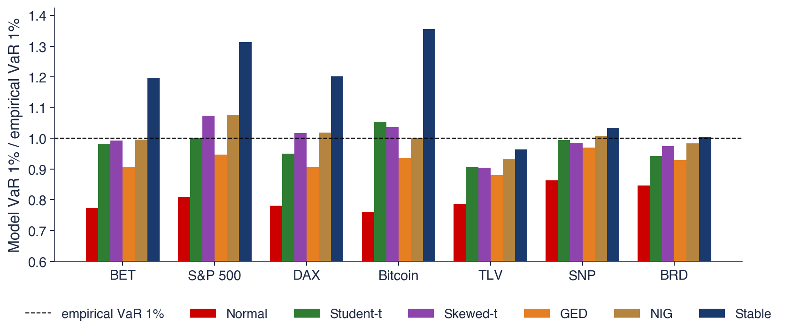

Capitolul 6: Selecția modelului și managementul riscului
Daniel Traian PELE
Academia de Studii Economice din București IDA Institute Digital Assets Blockchain Research Center AI4EFin Artificial Intelligence for Energy Finance Academia Română, Institutul de Prognoză Economică MSCA Digital Finance
Întrebarea: avem șapte distribuții candidate pentru randamentele zilnice; pe care să o folosească un manager de risc și cît de siguri putem fi?
Capitolele 2, 3 și 5: distribuția Normală eșuează; Student-t, distribuțiile stabile și teoria valorilor extreme descriu fiecare doar o parte a fenomenului
Traseul capitolului
candidații și proprietățile pe care trebuie să le reproducă; recapitulare: metoda verosimilității maxime
compararea modelelor: teste ale raportului de verosimilitate, AIC și BIC
verificarea unui model: teste de concordanță, grafice PP și QQ
scopul decide: ce model estimează corect VaR 1%, în eșantion și în afara lui
Since all models are wrong the scientist must be alert to what is importantly wrong. It is inappropriate to be concerned about mice when there are tigers abroad.
Capitolele 2, 3 și 5 au arătat că distribuția Normală nu descrie randamentele zilnice și că distribuția Student-t, distribuțiile stabile și teoria valorilor extreme surprind fiecare o parte din ceea ce îi scapă. Un manager de risc are de ales, așadar, între mai mulți candidați cu cozi groase, iar alegerea contează: candidații se aseamănă în centrul distribuției și diferă cu ordine de mărime în cozi, exact acolo unde se citesc valoarea expusă la risc (VaR, Value at Risk) și pierderea așteptată în coadă (ES, expected shortfall).
Datele capitolului arată concret ce este în joc. Estimat pe randamentele zilnice ale S&P 500 din 2000, modelul Normal dă un VaR 1% de 2,80%, față de valoarea empirică de 3,45%, iar distribuția stabilă dă 4,54%. Pe șapte serii (trei indici, Bitcoin și trei acțiuni de la București), VaR 1% Normal este prea mic cu 14% pînă la 24%, iar nicio distribuție nu cîștigă peste tot: distribuția Normală invers Gaussiană (NIG, normal inverse Gaussian) este cea mai bună pentru indici, distribuția erorii generalizate (GED, generalised error distribution) pentru Bitcoin, iar familia Student-t pentru acțiuni.
Capitolul construiește instrumentele acestei alegeri: metoda verosimilității maxime, testele raportului de verosimilitate și Vuong, criteriile informaționale AIC și BIC, testele de concordanță și graficele PP și QQ. Apoi judecă modelele după scopul pe care îl servesc, VaR 1% în eșantion și în afara lui, și se încheie cu supraajustarea și cu incertitudinea de model, adică dispersia cifrei de risc între modele care se potrivesc datelor aproximativ la fel de bine.

VaR 1% al șase modele estimate, împărțit la VaR 1% empiric, pentru BET, S&P 500, DAX, Bitcoin și trei acțiuni de la București (TLV, SNP, BRD); randamente logaritmice zilnice din 2000 (Bitcoin din 2014, acțiunile din 2010). Linia punctată de la 1 marchează un model care reproduce datele.
Rezultatele învățării
Scrieți log-verosimilitatea unui model candidat și explicați cum se obțin estimările de verosimilitate maximă.
Testați un model restrîns față de unul mai general cu testul raportului de verosimilitate și recunoașteți cazurile în care testul nu se aplică.
Calculați AIC, BIC, ΔAIC și ponderile Akaike și interpretați-le.
Aplicați și interpretați testele KS, Cramér–von Mises și Anderson–Darling și graficele PP și QQ, și explicați de ce KS este slab în cozi.
Judecați un model după VaR 1% în afara eșantionului, recunoașteți supraajustarea și raportați incertitudinea de model.
Seminarul 6 are loc înaintea acestui curs și exersează aceleași instrumente pe date.
Planul capitolului
Distribuțiile candidateȘapte distribuții pentru randamentele zilnice, cozile lor și statisticile pe care orice model trebuie să le reproducă.
Recapitulare: metoda verosimilității maximeLog-verosimilitatea, cazul Normal în formă analitică, estimările numerice, log-verosimilitatea profil a lui ν și problemele numerice.
Incertitudinea de modelStabilitatea bootstrap a cîștigătorului, incertitudinea parametrilor și a modelului, medierea modelelor și etapele selecției.
AI pentru descoperire științificăO întrebare deschisă despre randamentele filtrate, contribuția posibilă a AI și verificările necesare.
RezumatIdeile, formulele de reținut și întrebările de autoevaluare.
Distribuțiile candidate
Un model statistic al randamentelor se alege dintr-o listă de candidați, iar lista însăși este prima decizie de modelare. Această secțiune prezintă șapte distribuții folosite în literatură pentru randamentele zilnice, arată cît de diferit tratează ele pierderile mari, deși se aseamănă în centru, și fixează faptele empirice pe care orice candidat trebuie să le reproducă: asimetria, boltirea mare și eroarea ocazională din date care poate arăta ca un crah al pieței.
Statisticianul George Box a susținut că scopul modelării este o descriere utilă, nu una adevărată (Box, 1976). Orice distribuție estimată pe randamente este o simplificare: randamentele nu sînt independente, volatilitatea lor se schimbă în timp, iar distribuția lor se modifică odată cu regimurile pieței. Formula „toate modelele sînt greșite, dar unele sînt utile” rezumă argumentul său, iar motto-ul acestei pagini îi redă propriile cuvinte: cercetătorul trebuie să fie atent la ceea ce este greșit în mod important.
Pentru randamente, ceea ce este greșit în mod important depinde de scop. Evaluarea activelor și alegerea portofoliului depind mai ales de corpul distribuției, zilele obișnuite care formează cea mai mare parte a eșantionului. Managementul riscului depinde de coada stîngă, cele mai slabe 1% dintre zile, care conține puține observații, dar determină cerințele de capital, marjele și pierderile. Un model poate descrie bine corpul și prost coada, și invers.
Capitolul are, prin urmare, două obiective. Primul este un set de instrumente pentru compararea modelelor: teste bazate pe verosimilitate, criterii informaționale, teste de concordanță și grafice. Al doilea este un obicei: înainte de a ordona modelele, întrebați la ce va fi folosit modelul și judecați-l după această utilizare.
Pe scurt
George Box: un statistician caută un model util, nu unul adevărat Box (1976)
„toate modelele sînt greșite, dar unele sînt utile” este forma scurtă a argumentului său
Pentru randamente, „util” depinde de scop
evaluarea activelor și alegerea portofoliului: corpul distribuției (zilele obișnuite)
managementul riscului: coada stîngă (cele mai slabe zile, 1% din total)
Acest capitol: instrumentele de comparare a modelelor și obiceiul de a întreba „util pentru ce?”
Tabelul prezintă cei șapte candidați, cu numărul lor de parametri \(k\), forma cozilor și posibilitatea de a modela asimetria. Distribuția Normală are cozi subțiri, care descresc ca \(e^{-x^2/2}\). Distribuția Student-t are cozi de tip putere, cu densitatea descrescînd ca o putere a lui \(x\) determinată de numărul de grade de libertate \(\nu\); distribuția skewed-t a lui Hansen (1994) adaugă un parametru de asimetrie \(\lambda\). Distribuția erorii generalizate (GED), folosită de Nelson (1991), are cozi de tip \(e^{-|x|^\beta}\), mai groase decît cele ale distribuției Normale cînd \(\beta < 2\).
Amestecul Normal al lui Kon (1984) extrage fiecare zi din una dintre două distribuții Normale: cu probabilitatea \(w\) dintr-o distribuție a zilelor calme, \(N(\mu_1, \sigma_1^2)\), altfel dintr-o distribuție a zilelor agitate, \(N(\mu_2, \sigma_2^2)\). Fiecare componentă are cozi subțiri, dar componenta largă produce mult mai multe variații mari decît o singură distribuție Normală cu aceeași varianță. Distribuția Normală invers Gaussiană (NIG) a lui Barndorff-Nielsen (1997) face parte din familia hiperbolică generalizată, studiată pentru finanțe de Eberlein & Keller (1995); cozile ei sînt semigroase, un factor de tip putere înmulțit cu o descreștere exponențială.
Distribuțiile stabile din Capitolul 3 au cozi de tip putere cu indicele \(\alpha < 2\), cele mai groase din listă, și varianță infinită. Candidații diferă prin numărul de parametri, de la 2 pentru distribuția Normală la 5 pentru amestecul cu două componente, iar acest număr va conta la compararea modelelor: un model cu mai mulți parametri se poate ajusta întotdeauna cel puțin la fel de bine pe același eșantion.
\(k\): numărul de parametri; GED: generalised error distribution (distribuția erorii generalizate); NIG: normal inverse Gaussian (Normală invers Gaussiană), din familia hiperbolică generalizată Eberlein & Keller (1995)
Amestecul Normal: cu probabilitatea \(w\), o zi calmă \(N(\mu_1, \sigma_1^2)\), altfel o zi agitată \(N(\mu_2, \sigma_2^2)\)
P(X < −x) pentru fiecare candidat (media 0, varianța 1)
Întrebare pentru sală La x = 4, distribuția Student-t (ν = 4) dă o probabilitate P(X < −4) de 76 de ori mai mare decît distribuția Normală. Butonul ▶ mută pragul de la 2 la 6. De cîte ori mai mare este probabilitatea Student-t la x = 6?
Răspuns
De circa 536 000 de ori: 5,3 × 10−4 față de 9,9 × 10−10. La x = 2 cele două probabilități sînt aproape egale (raportul 1,0), la x = 3 raportul este 4,9, la x = 5 este 3 682. Coada Normală scade ca e−x²/2, coada Student-t ca o putere a lui x, deci raportul crește tot mai repede cu pragul. Media și varianța sînt aceleași; diferența stă numai în coadă, acolo unde se află VaR 1%.
Graficul desenează cîte un membru al fiecărei familii, toți standardizați la media 0 și varianța 1; distribuția stabilă, care nu are varianță, este scalată la același interval intercuartilic ca distribuția Normală. Panoul din stînga arată densitățile pe o scară liniară, cel din dreapta aceleași densități pe o scară verticală logaritmică, care face vizibile cozile.
Pe scara liniară curbele sînt apropiate: distribuțiile cu cozi groase au un vîrf mai înalt și mai îngust decît densitatea Normală și flancuri puțin mai subțiri, felul în care o distribuție cu aceeași varianță își compensează cozile mai mari. Pe scara logaritmică imaginea se schimbă. La patru abateri standard de centru, densitatea Normală se află deja sub toate celelalte, iar dincolo de cinci abateri standard coboară sub \(10^{-7}\), în timp ce densitățile cu cozi groase rămîn între aproximativ \(10^{-6}\) și \(10^{-3}\).
Aceasta este dificultatea centrală a selecției modelului pentru risc. Cele mai multe observații se află în centru, unde candidații coincid, deci datele conțin puțină informație pentru a-i separa, în timp ce mărimea de interes se află în coadă, unde ei diferă cel mai mult.
Pe scurt
Toate au media 0 și varianța 1 (distribuția stabilă: același interval intercuartilic ca distribuția Normală); panoul din dreapta folosește scara logaritmică
În centru arată aproape la fel; în cozi diferă cu cîteva ordine de mărime
Probabilitatea \(P(X < -4)\) a unei scăderi de patru abateri standard măsoară dezacordul din coadă pentru membrii desenați în grafic. Pentru distribuția Normală ea este \(3{,}2 \times 10^{-5}\), aproximativ o zi la 31 000 de zile de tranzacționare. Pentru candidații cu cozi groase ea variază de la \(9{,}5 \times 10^{-4}\) pentru GED, prin \(2{,}4 \times 10^{-3}\) pentru Student-t, \(2{,}5 \times 10^{-3}\) pentru amestecul Normal, \(3{,}2 \times 10^{-3}\) pentru NIG și \(4{,}5 \times 10^{-3}\) pentru skewed-t, pînă la \(8{,}1 \times 10^{-3}\) pentru distribuția stabilă.
Distribuția Student-t atribuie, așadar, acestei pierderi o probabilitate de circa 76 de ori mai mare decît distribuția Normală, deși cele două au aceeași varianță. O măsură de risc precum VaR 1% se află exact în această zonă, astfel încît alegerea modelului se traduce direct în mărimea riscului raportat.
Întrebare pentru sală: dacă toți candidații se potrivesc bine în centru, de ce nu îl păstrăm pe cel mai simplu? Răspuns: cel mai simplu, distribuția Normală, greșește exact în zona care determină cerințele de capital și de marjă. Un model bun pentru zilele obișnuite poate fi inutil pentru zilele care contează pentru risc.
Pe scurt
\(P(X < -4)\), o mișcare de patru abateri standard, pentru fiecare candidat din grafic:
Întrebare pentru sală Fără cele două zile greșite din mai 2016, boltirea randamentelor zilnice TLV este 16,5. Cît devine dacă cele două zile, −15,0% și +20,5%, rămîn în date?
Răspuns
20,5. Boltirea folosește puterea a patra a abaterilor de la medie, deci două zile extreme o mută mult, chiar dacă suma lor, +5,5%, este mică. Asimetria trece de la −0,87 la −0,58. În curs, ν̂ al distribuției Student-t scade de la 3,44 la 3,33, iar clasamentul AIC nu se schimbă (cîștigă Student-t în ambele cazuri). JB al TLV crește și el, pentru că (K − 3)² crește.
Întrebare pentru sală Boltirea randamentelor lunare DAX este 4,60 pe eșantionul SFESumm (iulie 2004 – mai 2014) și 5,06 pe 2004–2026. Butonul ▶ extinde eșantionul cu cîte un an. Crește boltirea treptat, pe măsură ce se adaugă ani?
Răspuns
Nu. Între 2014 și 2019 scade, pînă la 4,30 în mai 2016, pentru că lunile adăugate sînt liniștite. Urcă brusc la 4,93 cînd intră randamentul dintre începutul lui martie și începutul lui aprilie 2020, −21,70%, noul minim al eșantionului (cel vechi era −19,35%). Boltirea depinde de cîteva luni extreme, nu de numărul de luni. Pe 2004–2026 asimetria rămîne negativă (−0,72), iar testul Jarque–Bera respinge normalitatea cu JB = 70,2.
Înainte de a estima un model, datele trebuie descrise. Graficul arată randamentele logaritmice lunare ale DAX, calculate între primele zile de tranzacționare ale lunilor consecutive. Segmentul mai închis este eșantionul Quantlet-ului clasic SFESumm din manualul Franke, Härdle & Hafner (2019), iulie 2004 – mai 2014, cu \(n = 119\) luni; segmentul mai deschis extinde seria pînă în septembrie 2026.
Seria are trăsăturile care motivează capitolul. Lunile cu scăderi mari se grupează în crize: sfîrșitul lui 2008, vara lui 2011 și martie 2020, cea mai slabă lună a eșantionului extins, cu circa −21,7%. Lunile pozitive sînt mai frecvente, dar mai mici, deci distribuția este asimetrică spre stînga.
Randamentele lunare însumează circa douăzeci de randamente zilnice, așa că un argument de tip limită centrală ar sugera că ele sînt mai apropiate de distribuția Normală decît cele zilnice. Slide-ul următor arată că distribuția Normală este respinsă chiar și la această frecvență.
Pe scurt
Quantlet-ul SFESumm: randamentele logaritmice lunare DAX între primele zile de tranzacționare, iulie 2004 – mai 2014 (\(n = 119\)), extinse aici pînă la 1 sep. 2026
Chiar și randamentele lunare sînt asimetrice și au cozi groase: cifrele sînt pe slide-ul următor
Tabelul dă, pentru randamentele logaritmice lunare ale DAX în procente, minimul, maximul, abaterea standard \(\sigma\), volatilitatea anuală \(\sigma\sqrt{12}\), asimetria (skewness) \(E(X-\mu)^3/\sigma^3\) și boltirea (kurtosis) \(E(X-\mu)^4/\sigma^4\), unde \(\mu\) este media; distribuția Normală are asimetria 0 și boltirea 3. În eșantionul SFESumm, 2004–2014, abaterea standard lunară este 5,80% (anualizat 20,08%), asimetria −0,83 și boltirea 4,60. Pe 2004–2026 (\(n = 267\) luni), abaterea standard este 5,39% (anualizat 18,66%), asimetria −0,72 și boltirea 5,06. Testul Jarque–Bera din Capitolul 2 respinge normalitatea în ambele eșantioane, cu un p-value sub 0,001.
Randamentele zilnice se îndepărtează mult mai mult de distribuția Normală. Din 2000 (Bitcoin din 2014, acțiunile de la București din 2010), boltirea randamentelor logaritmice zilnice este 14,1 pentru BET, 13,7 pentru S&P 500, 9,1 pentru DAX, 15,0 pentru Bitcoin, 16,5 pentru Banca Transilvania (TLV), 11,9 pentru OMV Petrom (SNP) și 10,3 pentru BRD. Asimetria este −0,35 pentru S&P 500, −0,65 pentru BET și −0,70 pentru Bitcoin.
Acestea sînt țintele candidaților: un model pentru randamentele zilnice trebuie să producă o boltire mult peste 3 și, pentru unele serii, o coadă stîngă mai lungă. O listă de candidați aleasă după comoditate, nu după aceste fapte, ar decide rezultatul înaintea oricărui test.
Pe scurt
\(n\)
min
max
ab. std.
vol. anuală
asim.
boltire
DAX 2004–2014
119
\(-19{,}35\)
\(17{,}12\)
\(5{,}80\)
\(20{,}08\)
\(-0{,}83\)
\(4{,}60\)
DAX 2004–2026
267
\(-21{,}70\)
\(17{,}12\)
\(5{,}39\)
\(18{,}66\)
\(-0{,}72\)
\(5{,}06\)
Lunar, în %; ab. std.: abaterea standard \(\sigma\); vol. anuală: \(\sigma\sqrt{12}\)
asimetria \(E(X - \mu)^3/\sigma^3\) și boltirea (kurtosis) \(E(X - \mu)^4/\sigma^4\), cu \(\mu\) media; 0 și 3 pentru distribuția Normală
testul de normalitate Jarque–Bera (Capitolul 2): p-value \(<0{,}001\)
Randamente logaritmice zilnice din 2000 (Bitcoin din 2014, acțiunile BVB din 2010): boltirea
BET \(14{,}1\), S&P 500 \(13{,}7\), DAX \(9{,}1\), Bitcoin \(15{,}0\), TLV \(16{,}5\), SNP \(11{,}9\), BRD \(10{,}3\)
asimetria: S&P 500 \(-0{,}35\), BET \(-0{,}65\), Bitcoin \(-0{,}70\)
Observațiile extreme domină estimările din coadă, așa că o eroare într-una dintre ele poate schimba modelul estimat. Prețul de închidere ajustat al Băncii Transilvania (TLV) de la furnizorul de date EODHD arată un randament logaritmic de −15,0% pe 30 mai 2016, urmat de +20,5% pe 31 mai 2016. Așa cum arată Capitolul 2, ajustarea pentru acordarea de acțiuni gratuite este aplicată cu o zi întîrziere, ceea ce creează un crah fals urmat de o creștere falsă.
Cele două zile schimbă vizibil momentele. Cu ele, boltirea randamentelor zilnice TLV este 20,5, fără ele 16,5, iar numărul de grade de libertate estimat al distribuției Student-t, \(\hat\nu\), trece de la 3,33 la 3,44. Aici clasamentul modelelor după AIC nu se schimbă (Student-t este cel mai bun în ambele cazuri), dar într-un eșantion mai mic sau pentru o mărime definită de coadă două zile greșite ar putea schimba concluzia.
Regula care rezultă este ca înainte de orice selecție de model cele mai mari randamente să fie comparate cu prețurile de închidere și cu știrile, iar din date să fie eliminate doar erorile dovedite. În restul capitolului, cele două zile TLV sînt eliminate.
Pe scurt
Banca Transilvania (TLV), prețul ajustat de la EODHD: randamente logaritmice de \(-15{,}0\%\) pe 30 mai 2016 și \(20{,}5\%\) pe 31 mai 2016
ajustarea pentru acțiunile gratuite este aplicată cu o zi întîrziere (Capitolul 2): un crah fals urmat de o creștere falsă
Efectul celor două zile asupra modelului estimat
boltirea \(20{,}5\) cu ele, \(16{,}5\) fără; \(\hat\nu\) Student-t: \(3{,}33\) față de \(3{,}44\)
clasamentul AIC nu se schimbă aici (cel mai bun: Student-t), dar momentele se schimbă
Regula: înainte de orice selecție de model, comparați cele mai mari randamente cu prețurile de închidere și cu știrile; în restul capitolului, cele două zile sînt eliminate
Sinteza secțiunii
Cei șapte candidați acoperă cozi subțiri, semigroase și de tip putere, cu 2 pînă la 5 parametri; ei coincid în centru și diferă cu ordine de mărime în coadă. Randamentele zilnice au o boltire între 9 și 17 și, pentru mai multe serii, o asimetrie negativă, iar datele curate sînt o condiție a oricărei comparații. Secțiunea următoare reamintește metoda de estimare care transformă fiecare candidat într-un model estimat.
Recapitulare: metoda verosimilității maxime
Toate comparațiile din acest capitol pornesc de la log-verosimilitatea maximizată a fiecărui candidat. Această secțiune reamintește principiul verosimilității, rezolvă modelul Normal în formă analitică, prezintă estimările numerice ale celorlalți șase candidați pentru S&P 500 și le interpretează parametrii. Ea se încheie cu precizia parametrului de coadă, măsurată prin log-verosimilitatea profil, și cu problemele numerice ale optimizării.
Fie \(r_1, \dots, r_n\) randamente zilnice presupuse independente și identic distribuite (i.i.d.), cu densitatea \(f(r; \theta)\), unde \(\theta\) este vectorul parametrilor modelului, de exemplu \((\mu, \sigma)\) pentru modelul Normal. Verosimilitatea (likelihood) \(L(\theta) = \prod_t f(r_t; \theta)\) este densitatea comună a eșantionului observat, citită ca funcție de \(\theta\). Pentru că produsele multor numere mici sînt incomode numeric, iar sumele se derivează mai ușor, se lucrează cu log-verosimilitatea
Estimarea de verosimilitate maximă (ML, maximum likelihood) este valoarea parametrilor care face datele observate cele mai probabile, \(\hat\theta = \arg\max_\theta \ell(\theta)\). Valoarea maximizată \(\ell(\hat\theta)\) măsoară cît de bine descrie datele cel mai bun membru al unei familii și este materia primă a testului raportului de verosimilitate, a testului Vuong și a criteriilor informaționale din restul capitolului.
Pentru \(n\) mare, în condiții de regularitate, \(\hat\theta\) are o distribuție aproximativ Normală în jurul valorii adevărate \(\theta\), cu covarianța aproximată de inversa informației observate (observed information), \([-\partial^2\ell/\partial\theta\,\partial\theta^\top]^{-1}\). Derivata a doua măsoară curbura lui \(\ell\) în punctul de maxim: o log-verosimilitate puternic curbată înseamnă că mici modificări ale lui \(\theta\) reduc mult ajustarea, deci datele fixează precis parametrul.
Pe scurt
Datele \(r_1, \dots, r_n\), presupuse i.i.d. (independente și identic distribuite), cu densitatea \(f(r; \theta)\)
\(\theta\): vectorul parametrilor modelului (de exemplu \(\mu, \sigma\)); \(f\): densitatea modelului
verosimilitatea: \(L(\theta) = \prod_{t=1}^n f(r_t; \theta)\), densitatea eșantionului observat, ca funcție de \(\theta\)
log-verosimilitatea: \(\ell(\theta) = \sum_{t=1}^n \ln f(r_t; \theta)\); sumele se manipulează mai ușor decît produsele
Estimarea de verosimilitate maximă (ML, maximum likelihood): \(\hat\theta = \arg\max_\theta \ell(\theta)\)
\(\ell(\hat\theta)\), log-verosimilitatea maximizată, stă la baza tuturor comparațiilor din acest capitol
Pentru \(n\) mare, \(\hat\theta\) are o distribuție aproximativ Normală în jurul valorii adevărate \(\theta\)
Anulînd derivatele în raport cu \(\mu\) și \(\sigma^2\) se obțin \(\hat\mu = \bar r\) și \(\hat\sigma^2 = \frac{1}{n}\sum_t (r_t - \bar r)^2\), varianța de selecție cu numitorul \(n\), nu \(n - 1\). Înlocuind în \(\ell\), suma pătratelor devine \(n\hat\sigma^2\), iar log-verosimilitatea maximizată capătă forma compactă \(\ell(\hat\theta) = -\frac{n}{2}[\ln(2\pi\hat\sigma^2) + 1]\).
Pentru randamentele logaritmice zilnice ale S&P 500 în procente, din 2000 pînă în 2026, \(n = 6\,714\), media este \(\hat\mu = 0{,}025\), iar abaterea standard \(\hat\sigma = 1{,}213\). Atunci \(\ln(2\pi\hat\sigma^2) = 2{,}2240\) și \(\ell(\hat\theta) = -\frac{6714}{2}(2{,}2240 + 1) = -10\,823\). Numărul nu are sens în sine; el devine informativ cînd este comparat cu log-verosimilitatea maximizată a altui model pe aceleași date.
Modelul Normal este singurul candidat cu soluție analitică. Pentru ceilalți șase, log-verosimilitatea trebuie maximizată numeric.
Tabelul dă estimările ML și log-verosimilitățile maximizate ale celor șapte candidați pentru S&P 500. Modelul Normal ajunge la −10 823; fiecare candidat cu cozi groase obține mult mai mult, de la −9 925 pentru amestecul Normal la −9 824 pentru NIG, cea mai mare valoare. Student-t ajunge la −9 848, skewed-t la −9 838, GED la −9 854, iar distribuția stabilă la −9 893. Diferențele de zeci sau sute de puncte de log-verosimilitate sînt foarte mari: o diferență de 10 înseamnă că datele sînt de \(e^{10} \approx 22\,000\) de ori mai probabile sub un model estimat decît sub celălalt.
Algoritmul de optimizare este metoda simplex Nelder–Mead, aplicată parametrilor transformați, de exemplu \(\ln\sigma\) pentru o scală sau \(\ln(\nu - 2)\) pentru gradele de libertate, astfel încît căutarea se face într-un spațiu fără restricții și orice valoare candidat este admisibilă. Amestecul Normal se estimează cu algoritmul EM (expectation–maximisation), care alternează între atribuirea fiecărei zile a unei probabilități de apartenență la fiecare componentă și reestimarea componentelor. Densitatea stabilă nu are formă analitică și se calculează prin transformata Fourier rapidă (FFT, fast Fourier transform) a funcției caracteristice, ca în Capitolul 3.
Parametrii se citesc în parametrizarea folosită. În distribuția skewed-t a lui Hansen, \(\mu\) și \(\sigma\) sînt media și abaterea standard, deci \(\hat\sigma = 1{,}39\) se compară direct cu \(\hat\sigma = 1{,}213\) al modelului Normal; la Student-t și la GED, „scala” este un parametru de scală, nu abaterea standard.
Algoritmul de optimizare: Nelder–Mead aplicat parametrilor transformați (de exemplu \(\ln\sigma\), \(\ln(\nu - 2)\)); amestecul Normal prin algoritmul EM (expectation–maximisation); densitatea stabilă prin FFT (Capitolul 3)
Skewed-t: \(\mu\) și \(\sigma\) sînt media și abaterea standard (parametrizarea lui Hansen)
Estimarea Student-t \(\hat\nu = 2{,}67\) înseamnă că cozile densității descresc ca o putere a lui \(x\) cu exponentul determinat de \(\nu\), astfel încît momentele de ordin mai mic decît 2,67 există, iar cele de ordin mai mare nu. Varianța este finită (\(\nu > 2\)), dar boltirea nu (\(\nu < 4\)). Boltirea de selecție de 13,7 estimează atunci o mărime pe care modelul estimat o declară infinită, ceea ce explică de ce boltirea de selecție a randamentelor zilnice este instabilă și dominată de cîteva zile extreme.
Estimarea skewed-t \(\hat\lambda = -0{,}067\) este negativă, ceea ce înseamnă o coadă stîngă puțin mai lungă: scăderile mari sînt ceva mai probabile decît creșterile de aceeași mărime. Estimarea GED \(\hat\beta = 0{,}88\) este sub 2, cazul Normal, și chiar sub 1, cazul Laplace, ceea ce corespunde unui vîrf ascuțit și unor cozi mai groase decît cele exponențiale.
Amestecul Normal împarte zilele în 79% zile calme, cu abaterea standard 0,71%, și 21% zile agitate, cu abaterea standard 2,26% și o medie negativă de −0,223%, o lectură în termeni de regimuri ale pieței. Distribuția stabilă are \(\hat\alpha = 1{,}540\), mult sub 2, ceea ce îi dă cozi mai groase decît oricărui alt candidat.
Pe scurt
Student-t \(\hat\nu = 2{,}67\): cozi de tip \(x^{-2{,}67}\); varianța există (\(\nu > 2\)), boltirea nu există (\(\nu < 4\))
boltirea de selecție \(13{,}7\) estimează o mărime care, conform modelului estimat, este infinită
Skewed-t \(\hat\lambda = -0{,}067 < 0\): o coadă stîngă puțin mai lungă (crahuri)
GED \(\hat\beta = 0{,}88\): sub 2 (Normală) și chiar sub 1 (Laplace): un vîrf ascuțit
Amestecul Normal: \(79\%\) zile calme cu abaterea standard \(0{,}71\%\), \(21\%\) zile agitate cu \(2{,}26\%\) și medie negativă
Distribuția stabilă, \(\hat\alpha = 1{,}540\) (Capitolul 3): cozi mai groase decît orice alt candidat
Precizia lui \(\hat\nu\): log-verosimilitatea profil
Întrebare pentru sală Pentru S&P 500, ν̂ al distribuției Student-t este 2,67. Bitcoin are o boltire de selecție mai mare (15,0 față de 13,7). Este ν̂ al Bitcoin mai mic sau mai mare?
Răspuns
Mai mic: 2,23, cel mai mic dintre cele șapte serii, deci coada cea mai groasă. BET are 2,43, DAX 3,09, BRD 4,67. Un ν̂ apropiat de 2 înseamnă o varianță abia finită. Abaterea standard mare a Bitcoin (3,5% pe zi) intră în scală, nu în ν: scala Student-t a Bitcoin este 1,85, iar abaterea standard implicată, scală·√(ν/(ν − 2)), este 5,75%, peste abaterea standard de selecție (3,49%), pentru că ν̂ este aproape de 2.
Exemplu lucrat: testul raportului de verosimilitate
Întrebare pentru sală Pentru BRD, testul Student-t în skewed-t (λ = 0) dă LR = 3,01. Este parametrul de asimetrie necesar la 5%?
Răspuns
Nu: 3,01 < 3,84, p = 0,083. Valoarea fixată λ = 0 este în interiorul intervalului (−1, 1), deci teorema lui Wilks se aplică și valoarea critică este 3,84; 2,71 este valoarea pentru frontieră (Normală în Student-t). AIC preferă totuși skewed-t (ΔAIC al Student-t: 1,0), pentru că AIC nu este un test: penalizează un parametru cu 2, iar LR > 2. Asimetria este semnificativă doar pentru S&P 500 (LR = 19,63) și DAX (20,92).
Întrebare pentru sală Pe slide, Student-t este preferat distribuției stabile pe toate cele patru piețe. Pentru BRD, V = 1,89. Este preferința semnificativă la 5%?
Răspuns
Nu: |V| = 1,89 < 1,96, p = 0,059. Student-t explică în medie mai bine zilele BRD, dar diferența nu este separată de zgomot. Ziua cu cea mai mare |mt| este 19 decembrie 2018 (mt = −2,48: distribuția stabilă explică mai bine această cădere). Pentru TLV și SNP, V = 3,77 și 4,16. Suma diferențelor zilnice este exact diferența log-verosimilităților, ℓ(Student-t) − ℓ(stabilă).
Întrebare pentru sală Slide-ul dă intervalul de 95% pentru ν al S&P 500, [2,47; 2,89], unde profilul intersectează pragul. Ce puncte ale grilei cu pasul 0,1 folosite în grafic se află în interval?
Răspuns
De la 2,5 la 2,8. Capetele adevărate, 2,47 și 2,89, se află între punctele grilei (2,4–2,5 și 2,8–2,9); o grilă de 0,1 citită direct ar da [2,5; 2,8], un interval prea îngust. Intervalul nu este simetric în jurul lui ν̂ = 2,67: 0,20 la stînga, 0,22 la dreapta, pentru că profilul nu este o parabolă. La ν = 5, log-verosimilitatea profil este cu 92,3 sub maxim.
Precizia lui \(\hat\nu\) se citește din log-verosimilitatea profil (profile log-likelihood). Pentru fiecare valoare fixată a lui \(\nu\) dintr-o grilă, \(\ell\) se maximizează în raport cu locația și scala, iar graficul arată rezultatul minus maximul global, \(\ell(\nu) - \ell(\hat\nu)\). Curba are vîrful la \(\hat\nu = 2{,}67\) (linia punctată verticală) și scade abrupt de ambele părți; la \(\nu = 5\) ea se află cu 92 de puncte sub maxim.
Conform argumentului raportului de verosimilitate din secțiunea următoare, un interval de încredere de 95% pentru \(\nu\) conține toate valorile pentru care \(2[\ell(\hat\nu) - \ell(\nu)] \le 3{,}84\), cuantila de 95% a distribuției \(\chi^2(1)\), adică toate valorile \(\nu\) al căror profil se află deasupra liniei întrerupte de la \(-3{,}84/2 = -1{,}92\). Profilul intersectează linia întreruptă la \(\nu = 2{,}47\) și \(\nu = 2{,}89\), deci intervalul este \([2{,}47; 2{,}89]\); pe grila cu pasul 0,1 folosită pentru grafic, punctele din interior merg de la 2,5 la 2,8.
Intervalul îngust arată că indicele de coadă al S&P 500 este bine determinat de cele 6 714 randamente zilnice. O distribuție Student-t cu 5 grade de libertate, valoare folosită adesea implicit, este respinsă categoric pentru această serie. Log-verosimilitatea profil este preferabilă intervalului simetric construit din eroarea standard atunci cînd log-verosimilitatea este asimetrică în jurul maximului, cum este aici.
Pe scurt
Pentru fiecare \(\nu\), maximizăm \(\ell\) în raport cu locația și scala; la \(\nu = 5\), curba se află cu \(92\) sub maximul său
Intervalul de încredere de 95%: toate valorile \(\nu\) pentru care \(2[\ell(\hat\nu) - \ell(\nu)] \le 3{,}84\), aici \([2{,}47; 2{,}89]\) în jurul lui \(\hat\nu = 2{,}67\): grosimea cozilor este estimată precis
Maximizarea numerică poate eșua în moduri care produc cifre greșite fără niciun mesaj de eroare. Primul risc este un maxim local: optimizatorul urcă pe cel mai apropiat deal și se oprește, chiar dacă există altul mai înalt. Amestecurile sînt deosebit de expuse, pentru că componentele pot fi permutate sau contopite; remediul este pornirea din mai multe valori inițiale și păstrarea celui mai bun rezultat, iar amestecurile din acest capitol folosesc între 4 și 12 puncte de pornire.
Al doilea risc este frontiera spațiului parametrilor: \(\nu \to 2\) la Student-t, unde varianța devine infinită, o pondere a amestecului care tinde la 0 sau \(|\lambda| \to 1\) la skewed-t. La frontieră, erorile standard obișnuite și distribuția obișnuită a statisticilor de test nu mai sînt valide, problemă tratată în detaliu în secțiunea următoare. Al treilea risc este parametrizarea: aceeași distribuție poate fi scrisă cu parametri diferiți, iar convențiile programelor diferă. În scipy, de exemplu, scala distribuției Student-t nu este abaterea standard, care este egală cu \(\mathrm{scale}\sqrt{\nu/(\nu - 2)}\).
O verificare simplă de consistență prinde multe erori: cînd un model îl conține pe altul ca și caz particular, log-verosimilitatea lui maximizată nu poate fi mai mică. Dacă skewed-t raportează pe aceleași date un \(\ell(\hat\theta)\) mai mic decît Student-t, optimizarea a eșuat.
Pe scurt
Maxime locale: optimizatorul se poate opri pe un deal care nu este cel mai înalt
remediu: mai multe valori inițiale (amestecurile din acest capitol folosesc între 4 și 12 puncte de pornire)
Frontiere: \(\nu \to 2\), o pondere a amestecului \(\to 0\), \(|\lambda| \to 1\)
erorile standard și testele obișnuite nu sînt valide la frontieră (secțiunea următoare)
Parametrizarea: aceeași distribuție, parametrizări diferite
scala Student-t din scipy nu este abaterea standard: \(\mathrm{sd} = \mathrm{scale}\sqrt{\nu/(\nu - 2)}\)
Verificare: comparați \(\ell(\hat\theta)\) pentru modelele imbricate; un model mai general nu poate avea un maxim mai mic
Sinteza secțiunii
Metoda verosimilității maxime transformă fiecare candidat într-un model estimat și într-un singur număr, \(\ell(\hat\theta)\). Pentru S&P 500, fiecare model cu cozi groase depășește log-verosimilitatea Normală cu aproximativ 900 pînă la 1 000 de puncte, NIG atinge cea mai mare valoare, iar indicele de coadă Student-t este estimat la 2,67, cu intervalul de 95% \([2{,}5; 2{,}8]\).Secțiunea următoare întreabă cînd un cîștig de log-verosimilitate este mai mare decît ce ar produce întîmplarea.
Modele imbricate: testul raportului de verosimilitate
Un model mai general se ajustează întotdeauna cel puțin la fel de bine ca un model pe care îl conține. Testul raportului de verosimilitate decide dacă acest cîștig depășește ce ar produce zgomotul de selecție. Această secțiune definește modelele imbricate, enunță teorema lui Wilks, aplică testul parametrului de asimetrie și distribuției Normale în GED, tratează cazul de frontieră al distribuției Normale în Student-t și introduce testul Vuong pentru modelele neimbricate.
Modelul 0 este imbricat (nested) în modelul 1 dacă se obține din modelul 1 fixînd unii dintre parametrii acestuia. Distribuția Normală este distribuția GED cu \(\beta = 2\); Student-t este skewed-t cu \(\lambda = 0\); distribuția Normală este limita distribuției Student-t cînd \(\nu \to \infty\), adică valoarea \(1/\nu = 0\). Ultimul caz este special, pentru că \(1/\nu = 0\) se află la marginea regiunii admisibile \(1/\nu \ge 0\), nu în interiorul ei.
Multe perechi de candidați nu sînt imbricate: Student-t și GED, Student-t și distribuția stabilă, skewed-t și NIG. Niciunul dintre membrii unei astfel de perechi nu este caz particular al celuilalt, deci un test construit pe restricții nu îi poate compara, iar alte instrumente sînt necesare: testul Vuong de la sfîrșitul acestei secțiuni și criteriile informaționale din secțiunea următoare.
Pentru modele imbricate are loc întotdeauna \(\ell_1(\hat\theta_1) \ge \ell_0(\hat\theta_0)\), pentru că modelul mai general îl poate reproduce pe cel restrîns alegînd valorile fixate. Întrebarea statistică nu este, așadar, dacă modelul mai general se ajustează mai bine, ci dacă îmbunătățirea depășește ceea ce parametrii suplimentari ar obține ajustînd zgomotul.
Pe scurt
Modelul 0 este imbricat în modelul 1 dacă modelul 0 este modelul 1 cu unii parametri fixați
Normală în GED: \(\beta = 2\)
Student-t în skewed-t: \(\lambda = 0\)
Normală în Student-t: \(\nu = \infty\), adică \(1/\nu = 0\), la marginea spațiului parametrilor
Neimbricate: Student-t și GED, Student-t și stabilă, skewed-t și NIG
niciunul nu este caz particular al celuilalt: sînt necesare alte instrumente (testul Vuong, AIC)
Modele imbricate: întotdeauna \(\ell_1(\hat\theta_1) \ge \ell_0(\hat\theta_0)\); întrebarea este dacă cîștigul depășește ce s-ar obține din întîmplare
Ipoteza nulă \(H_0\) spune că modelul restrîns 0 este adevărat; alternativa \(H_1\) este modelul mai general 1. Cu \(\ell_0\) și \(\ell_1\) log-verosimilitățile maximizate și \(k_0 < k_1\) numerele de parametri, statistica raportului de verosimilitate (LR, likelihood ratio) este dublul cîștigului de log-verosimilitate maximizată:
Cum \(\ell\) este un logaritm, \(LR\) este de două ori logaritmul raportului dintre probabilitatea datelor sub modelul general estimat și sub cel restrîns. Teorema lui Wilks (Wilks, 1938) îi dă distribuția sub \(H_0\): pentru \(n\) mare, \(LR\) are aproximativ distribuția hi-pătrat cu \(d = k_1 - k_0\) grade de libertate, numărul de restricții. Teorema cere ca valorile fixate să se afle în interiorul spațiului parametrilor.
La nivelul de 5%, \(H_0\) se respinge cînd \(LR\) depășește cuantila de 95% \(\chi^2_{0{,}95}(d)\), care este 3,84 pentru o restricție și 5,99 pentru două. Aceste praguri sînt mici în comparație cu diferențele de log-verosimilitate din secțiunea anterioară, ceea ce sugerează deja că multe restricții vor fi respinse pe date zilnice.
Pentru S&P 500, Student-t ajunge la \(\ell = -9\,848\), iar skewed-t la \(\ell = -9\,838\). Skewed-t are un parametru în plus, deci \(d = 1\). Din log-verosimilitățile nerotunjite, \(LR = 19{,}63\), mult peste 3,84, cu un p-value sub 0,001: restricția \(\lambda = 0\) este respinsă, iar S&P 500 are nevoie de un parametru de asimetrie. DAX dă același răspuns, cu \(LR = 20{,}92\) și \(p < 0{,}001\).
BET și Bitcoin dau răspunsul opus. Pentru BET, \(LR = 0{,}35\), cu \(p = 0{,}555\); pentru Bitcoin, \(LR = 0{,}42\), cu \(p = 0{,}515\). În ambele cazuri, skewed-t nu se ajustează semnificativ mai bine decît Student-t simetrică, deci datele nu arată asimetrie a cozilor odată ce cozile groase sînt permise. Asimetria de selecție de −0,65 pentru BET și −0,70 pentru Bitcoin se explică atunci prin cîteva zile extreme, nu printr-o coadă stîngă sistematic mai lungă.
Testul distribuției Normale în GED (\(\beta = 2\)) dă valori \(LR\) între 1 431 pentru Bitcoin și 2 298 pentru BET: modelul Normal este respins pentru fiecare serie, cu o marjă uriașă. Interpretarea este că cei doi indici ai piețelor dezvoltate au o coadă stîngă mai lungă, în timp ce BET și Bitcoin au cozi groase, dar aproximativ simetrice.
Testarea distribuției Normale față de Student-t înseamnă testarea ipotezei \(H_0: 1/\nu = 0\). Această valoare se află pe marginea spațiului parametrilor \(1/\nu \ge 0\), iar teorema lui Wilks nu se aplică, pentru că estimarea poate cădea doar de o parte a valorii nule. Self & Liang (1987) au arătat că distribuția lui \(LR\) sub \(H_0\) este atunci un amestec 50:50 de \(\chi^2(0)\), o masă de probabilitate concentrată în 0, și \(\chi^2(1)\): în jumătate dintre eșantioane cea mai bună ajustare este chiar distribuția Normală și \(LR = 0\).
Valoarea critică la 5% devine cuantila de 90% a distribuției \(\chi^2(1)\),\(\chi^2_{0{,}90}(1) = 2{,}71\), în loc de 3,84, iar p-value-ul naiv calculat din \(\chi^2(1)\) este dublul celui corect. Aceeași problemă apare ori de cîte ori ipoteza nulă fixează un parametru la marginea domeniului său, de exemplu o pondere a amestecului \(w = 0\) sau o varianță egală cu 0.
Pe date reale frontiera nu are efect practic: \(LR = 1\,949\) pentru S&P 500 și \(1\,337\) pentru Bitcoin, deci distribuția Normală este respinsă cu oricare valoare critică. Ce credeți? Contează frontiera cînd \(LR\) este de ordinul miilor? Răspuns: nu pentru această decizie; contează însă în eșantioane mici și pentru valori \(LR\) la limită, unde înjumătățește p-value-ul și poate transforma o nerespingere într-o respingere.
Pe scurt
\(H_0\): \(1/\nu = 0\) este pe marginea spațiului \(1/\nu \ge 0\): teorema lui Wilks nu se aplică
Self & Liang (1987): distribuția statisticii sub \(H_0\) este un amestec 50:50 de \(\chi^2(0)\) (o masă de probabilitate concentrată în 0) și \(\chi^2(1)\)
valoarea critică la 5%: \(\chi^2_{0{,}90}(1) = 2{,}71\) în loc de \(3{,}84\); p-value-ul naiv este dublul celui corect
Date reale: \(LR\) = 1 949 (S&P 500), 1 337 (Bitcoin): modelul Normal este respins cu oricare valoare critică
Aceeași problemă apare pentru o pondere a amestecului \(w = 0\) și pentru parametri de varianță egali cu 0
Ce credeți? Contează frontiera cînd \(LR\) este de ordinul miilor?
Răspuns
nu pentru decizia de aici; contează însă în eșantioane mici și pentru valori \(LR\) la limită, unde înjumătățește p-value-ul
Pentru modele neimbricate, Vuong (1989) compară densitățile estimate zi cu zi. Pentru fiecare zi \(t\),\(m_t = \ln f_1(r_t) - \ln f_2(r_t)\) măsoară cu cît explică modelul 1 acea zi mai bine decît modelul 2. Cu \(\bar m\) și \(s_m\) media și abaterea standard a valorilor \(m_t\), statistica \(V = \sqrt{n}\,\bar m / s_m\) are aproximativ distribuția Normală standard dacă ambele modele sînt la fel de aproape de distribuția adevărată. La nivelul de 5%, \(V > 1{,}96\) favorizează primul model, iar \(V < -1{,}96\) pe al doilea; valorile intermediare nu le separă.
Tabelul dă \(V\), cu p-value-ul în paranteză, pentru trei perechi și patru serii. Student-t este preferat distribuției stabile pe fiecare serie, cu \(V\) de la 6,52 pentru S&P 500 la 16,47 pentru Bitcoin. NIG este preferat distribuției skewed-t pentru S&P 500 (\(V = -2{,}20\),\(p = 0{,}028\)), DAX (\(V = -2{,}97\),\(p = 0{,}003\)) și Bitcoin (\(V = -6{,}76\)), în timp ce pentru BET diferența nu este semnificativă (\(V = -1{,}34\),\(p = 0{,}179\)).
Comparația Student-t–GED diferă de la o piață la alta. Student-t este mai aproape pentru BET (\(V = 3{,}70\)), GED este mai aproape pentru Bitcoin (\(V = -3{,}80\)), iar pentru S&P 500 (\(V = 0{,}40\)) și DAX (\(V = -0{,}23\)) cele două nu se pot separa. Testul Vuong dă astfel un prim semn al unui rezultat pe care criteriile informaționale îl vor confirma: cel mai bun model depinde de piață.
Pe scurt
Student-t față de GED
Student-t față de stabilă
skewed-t față de NIG
BET
\(3{,}70\) (\(<0{,}001\))
\(9{,}33\) (\(<0{,}001\))
\(-1{,}34\) (\(0{,}179\))
S&P 500
\(0{,}40\) (\(0{,}686\))
\(6{,}52\) (\(<0{,}001\))
\(-2{,}20\) (\(0{,}028\))
DAX
\(-0{,}23\) (\(0{,}817\))
\(7{,}66\) (\(<0{,}001\))
\(-2{,}97\) (\(0{,}003\))
Bitcoin
\(-3{,}80\) (\(<0{,}001\))
\(16{,}47\) (\(<0{,}001\))
\(-6{,}76\) (\(<0{,}001\))
Vuong (1989): \(m_t = \ln f_1(r_t) - \ln f_2(r_t)\), \(V = \sqrt{n}\,\bar m / s_m \approx N(0, 1)\) dacă ambele modele sînt la fel de aproape de adevăr
\(f_1, f_2\): cele două densități estimate; \(m_t\): cu cît explică modelul 1 mai bine ziua \(t\); \(\bar m\), \(s_m\): media și abaterea standard a valorilor \(m_t\)
\(V > 1{,}96\): primul model este mai aproape; \(V < -1{,}96\): al doilea; p-value-ul este în paranteză
Student-t este preferat distribuției stabile pe toate piețele; NIG este preferat distribuției skewed-t pentru S&P 500 și DAX; comparația Student-t–GED diferă de la o piață la alta
Testul raportului de verosimilitate compară modele imbricate prin dublul cîștigului de log-verosimilitate, raportat la o distribuție \(\chi^2\) cu atîtea grade de libertate cîte restricții există, cu condiția ca ipoteza nulă să se afle în interiorul spațiului parametrilor; la frontieră, p-value-ul corect este jumătate din cel naiv. Parametrul de asimetrie este necesar pentru S&P 500 și DAX, dar nu pentru BET și Bitcoin, distribuția Normală este respinsă peste tot, iar testul Vuong ordonează perechile neimbricate diferit de la o piață la alta. Secțiunea următoare introduce criterii care ordonează toți candidații deodată.
Criterii informaționale: AIC și BIC
Testele compară cîte două modele și răspund la o întrebare de tip da sau nu. Criteriile informaționale ordonează oricîți candidați, imbricați sau nu, pe o scară comună. Această secțiune prezintă argumentul lui Akaike pornind de la divergența Kullback–Leibler, definește AIC și BIC, introduce ΔAIC și ponderile Akaike și le aplică celor șapte candidați pe S&P 500 și pe alte șase serii.
Hirotugu Akaike a întrebat ce model va descrie cel mai bine date noi, nu ce model este adevărat. El a măsurat distanța de la densitatea adevărată \(g\) la un model \(f\) prin divergența Kullback–Leibler (Kullback & Leibler, 1951),
\[KL(g, f) = E_g[\ln g(R) - \ln f(R)] \ge 0,\]
unde \(R\) este un randament nou generat de \(g\), iar \(E_g\) este media calculată sub \(g\). Divergența este zero doar cînd \(f = g\). Cum \(E_g \ln g(R)\) nu depinde de model, a ordona modelele după KL este totuna cu a le ordona după media log-densității lor pe date noi.
Log-verosimilitatea maximizată \(\ell(\hat\theta)\) este un estimator natural al acestei medii, dar este prea optimistă, pentru că aceleași date servesc și la alegerea lui \(\hat\theta\), și la evaluarea lui. Akaike (1974) a arătat că supraestimarea este, în medie, de aproximativ \(k\), numărul parametrilor estimați. Scăzînd \(k\) din \(\ell(\hat\theta)\) se corectează deplasarea; înmulțită cu −2, pentru a avea scara statisticii raportului de verosimilitate, corecția devine o penalizare de 2 pentru fiecare parametru, care definește criteriul de pe slide-ul următor.
Pe scurt
Hirotugu Akaike și-a pus întrebarea: ce model va descrie cel mai bine date noi?
distanța de la distribuția adevărată \(g\) la un model \(f\): divergența Kullback–Leibler Kullback & Leibler (1951)
\(KL(g, f) = E_g[\ln g(R) - \ln f(R)] \ge 0\), zero doar dacă \(f = g\)
\(R\): un randament nou, generat de distribuția adevărată \(g\); \(E_g\): media calculată sub \(g\)
\(\ell(\hat\theta)\) este prea optimistă: aceleași date servesc și la estimarea lui \(\hat\theta\), și la evaluarea lui
supraestimarea este, în medie, de circa \(k\), numărul de parametri Akaike (1974)
Rezultatul: o penalizare de 2 pentru fiecare parametru corectează supraestimarea; criteriul obținut, AIC, este pe slide-ul următor
Ambele răsplătesc ajustarea prin \(-2\ell(\hat\theta)\) și penalizează complexitatea prin numărul de parametri \(k\); pentru ambele, valoarea mai mică este preferată. AIC caută modelul cu cea mai bună performanță predictivă; Stone (1977) a arătat că este asimptotic echivalent cu validarea încrucișată leave-one-out. În eșantioane mici, corecția sa nu este suficientă, iar varianta corectată \(\mathrm{AICc} = \mathrm{AIC} + 2k(k+1)/(n - k - 1)\) a lui Hurvich & Tsai (1989) este preferată.
BIC caută modelul adevărat, dacă acesta se află printre candidați: este consistent, adică alege modelul adevărat cu o probabilitate care tinde la 1 cînd \(n\) crește. Penalizarea sa pe parametru este \(\ln n\), adică 8,81 pentru cele \(n = 6\,714\) randamente zilnice ale S&P 500, de peste patru ori mai mare decît penalizarea AIC, egală cu 2. BIC favorizează, așadar, modele mai mici decît AIC, cu atît mai puternic cu cît eșantionul este mai lung.
Valoarea absolută a lui AIC sau BIC nu are sens: depinde de unitățile datelor și de mărimea eșantionului. Doar diferențele dintre modele estimate pe aceleași date pot fi interpretate.
Diferența \(\Delta_i = \mathrm{AIC}_i - \min_j \mathrm{AIC}_j\) măsoară cît de departe este modelul \(i\) de cel mai bun candidat. Burnham & Anderson (2004) dau reguli practice: modelele cu \(\Delta \le 2\) au un sprijin substanțial, cele cu \(4 \le \Delta \le 7\) considerabil mai puțin, iar cele cu \(\Delta > 10\) practic niciunul.
Diferențele se pot transforma în ponderi Akaike (Akaike weights),
care au suma 1 și se pot citi ca ponderea dovezilor în favoarea modelului \(i\) dintre candidații considerați. Pentru două modele cu \(\Delta = 0\) și \(\Delta = 2\), ponderile sînt \(1/(1 + e^{-1}) \approx 0{,}73\) și \(0{,}27\): modelul mai bun este favorizat, dar celălalt păstrează mai mult de un sfert din pondere.
Ce credeți? Este \(\Delta = 2\) o diferență „semnificativă”? Răspuns: nu. AIC nu este un test și nu are nivel de semnificație; o diferență de 2 înseamnă că ambele modele rămîn plauzibile, cum arată ponderile. Ponderile sînt și relative la lista de candidați: adăugarea sau eliminarea unui model le schimbă pe toate.
Pe scurt
\(\Delta_i = \mathrm{AIC}_i - \min_j \mathrm{AIC}_j\); regulile practice din Burnham & Anderson (2004):
Tabelul aplică criteriile pentru S&P 500. Pentru NIG, cu \(\ell(\hat\theta) = -9\,824\) și \(k = 4\),\(\mathrm{AIC} = -2(-9\,824) + 2 \cdot 4 = 19\,657\). NIG are cel mai mic AIC și cel mai mic BIC, deci ΔAIC și ΔBIC sînt amîndouă 0. Următorul model, skewed-t, are \(\Delta\mathrm{AIC} = 28{,}1\), deci \(e^{-\Delta/2} \approx 8{,}1 \times 10^{-7}\), iar NIG primește o pondere Akaike practic egală cu 1.
Ceilalți candidați urmează la distanțe mai mari: Student-t la ΔAIC 45,7, GED la 57,9, distribuția stabilă la 137,3, amestecul Normal la 202,5 și distribuția Normală la 1 993,2. După regulile practice, niciunul nu are vreun sprijin față de NIG pentru această serie.
Cele două criterii coincid aici, pentru că diferențele de log-verosimilitate sînt mult mai mari decît penalizările. Acolo unde diferă, BIC apropie modelele mici de lider: Student-t, cu 3 parametri, are ΔBIC 38,9 față de ΔAIC 45,7, iar distribuția Normală 1 979,6 față de 1 993,2.
NIG cîștigă pe ambele criterii; următorul model, skewed-t, are \(\Delta = 28{,}1\), deci \(e^{-\Delta/2} \approx 8{,}1 \times 10^{-7}\): ponderea \(w \approx 1\) pentru NIG
Modelul Normal: \(\Delta\)AIC de 1 993; distribuția stabilă: 137
Întrebare pentru sală Pentru BRD, AIC preferă skewed-t, iar Student-t are ΔAIC = 1,0. Ce ponderi Akaike primesc cele două modele?
Răspuns
0,62 pentru skewed-t și 0,38 pentru Student-t (celelalte cinci modele au ponderi practic nule): w = e−Δ/2/Σ e−Δj/2, cu e−0,5 = 0,61. O diferență de 1 lasă ambele modele plauzibile; AIC nu este un test. Cu ponderile BIC, ordinea se inversează: 0,93 pentru Student-t.
Întrebare pentru sală Pentru BRD, AIC preferă skewed-t (ΔAIC al Student-t: 1,0). Butonul ▶ trece la BIC. Ce model preferă BIC?
Răspuns
Student-t, cu ΔBIC = 5,2 pentru skewed-t. BIC penalizează parametrul suplimentar cu ln 3 771 = 8,24, mai mult decît cîștigul de ajustare (LR = 3,01). Pentru TLV și SNP, ambele criterii aleg Student-t; pentru BET, S&P 500 și DAX, NIG; pentru Bitcoin, GED. Modelul Normal are ΔBIC între 472 și 2 412.
Harta termică repetă comparația pentru șapte serii: BET, S&P 500, DAX, Bitcoin și acțiunile de la București Banca Transilvania (TLV), OMV Petrom (SNP) și BRD. Fiecare rînd este o serie, fiecare coloană un candidat, iar fiecare celulă arată ΔAIC; valoarea 0 marchează cel mai bun model al rîndului. Scara culorilor este logaritmică în ΔAIC + 1, astfel încît atît diferențele de 2, cît și cele de 2 000 sînt vizibile.
Citită pe coloane, harta arată că modelul Normal este coloana cea mai închisă pentru fiecare serie, cu ΔAIC de la 479 pentru BRD la 2 425 pentru BET. Citită pe rînduri, celula albă, cîștigătorul, se mută: NIG pentru cei trei indici, GED pentru Bitcoin, Student-t pentru TLV și SNP și skewed-t pentru BRD.
Pentru acțiunile de la București mai multe modele cu cozi groase sînt apropiate: Student-t și skewed-t sînt la cel mult 2 puncte unul de altul pentru toate cele trei acțiuni. Pentru indici, în schimb, cîștigătorul este clar, iar modelul următor se află la cel puțin 14 puncte în urmă.
Pe scurt
Fiecare rînd: o serie; 0 marchează cel mai bun model; celule mai închise: modele mai slabe (scară logaritmică a culorii)
Prima lecție a hărții este că nu există un cîștigător unic: cea mai bună distribuție depinde de piață. NIG cîștigă pentru indici, GED pentru Bitcoin, iar familia Student-t pentru acțiunile individuale. Un sistem de risc care aplică aceeași distribuție tuturor activelor acceptă, așadar, o ajustare mai slabă pentru unele dintre ele.
Unele concluzii sînt robuste pe toate cele șapte serii. Modelul Normal este ultimul peste tot, cu 479 (BRD) pînă la 2 425 (BET) de puncte AIC. Distribuția stabilă, cu ΔAIC între 23 și 197, și amestecul Normal nu sînt niciodată competitive: cozile stabile sînt prea groase pentru randamentele zilnice, iar două componente Normale nu sînt suficient de flexibile.
Întrebare pentru sală: pentru BRD, AIC preferă skewed-t, iar Student-t este doar cu 1,0 puncte în urmă; ce model preferă BIC? Răspuns: Student-t. Un parametru în minus reduce BIC cu \(\ln n \approx 8{,}2\) puncte pentru eșantionul BRD, mai mult decît cîștigul de ajustare adus de parametrul de asimetrie. Cu o diferență de circa 1, cele două modele sînt practic la egalitate, iar alegerea dintre ele contează mai puțin decît alegerea dintre ele și distribuția Normală.
Pe scurt
Niciun cîștigător unic: cel mai bun model depinde de piață
modelul Normal este ultimul peste tot, cu \(\Delta\)AIC între 479 (BRD) și 2 425 (BET)
distribuția stabilă (\(\Delta\) de la 23 la 197) și amestecul Normal nu sînt niciodată competitive
Întrebare pentru sală: pentru BRD, AIC preferă skewed-t (\(\Delta\) al Student-t: \(1{,}0\)); ce model preferă BIC?
Răspuns
Student-t: un parametru în minus reduce BIC cu \(\ln n \approx 8{,}2\), mai mult decît cîștigul de ajustare; cu \(\Delta \approx 1\), cele două sînt practic la egalitate
Sinteza secțiunii
AIC și BIC ordonează toți candidații estimați pe aceleași date după log-verosimilitatea penalizată, cu o penalizare de 2 pe parametru pentru AIC și \(\ln n\) pentru BIC; ΔAIC și ponderile Akaike exprimă dovezile în favoarea fiecărui model. Pe randamentele zilnice, distribuția Normală este ultima pe fiecare serie, distribuția stabilă și amestecul Normal nu sînt niciodată competitive, iar cîștigătorul depinde de piață. Secțiunea următoare întreabă dacă cel mai bun model se potrivește de fapt datelor.
Teste de concordanță
Clasamentul spune care candidat este cel mai bun dintre cei considerați; nu spune dacă cel mai bun se potrivește datelor. Testele de concordanță (goodness of fit) compară un singur model estimat cu datele. Această secțiune trece de la testul \(\chi^2\) al lui Pearson la testele bazate pe funcția de repartiție empirică, tratează problema parametrilor estimați, compară puterea testelor Kolmogorov–Smirnov, Cramér–von Mises și Anderson–Darling și le aplică pe S&P 500.
Testul \(\chi^2\) al lui Pearson și funcția de repartiție empirică
Primul test de concordanță este testul \(\chi^2\) al lui Pearson (1900). Datele se grupează în clase, iar frecvența observată în fiecare clasă se compară cu frecvența așteptată sub model. Testul este general, dar rezultatul lui depinde de alegerea claselor, iar cozile, unde cad puține observații, sînt comasate în clase largi sau slab reprezentate, un neajuns serios pentru datele cu cozi groase.
Testele bazate pe funcția de repartiție empirică (EDF, empirical distribution function) evită clasele. EDF \(F_n(x) = \frac{1}{n}\#\{t: r_t \le x\}\) este proporția observațiilor mai mici sau egale cu \(x\); este o funcție în trepte care crește cu \(1/n\) la fiecare observație. Sub un model corect, \(F_n\) converge la funcția de repartiție a modelului \(F\), deci distanța dintre cele două măsoară nepotrivirea.
Capitolul folosește trei teste EDF, care diferă prin felul în care măsoară această distanță: testul Kolmogorov–Smirnov ia cea mai mare diferență, testul Cramér–von Mises integrează pătratul diferenței, iar testul Anderson–Darling integrează un pătrat al diferenței ponderat spre cozi. Stephens (1974) le compară sistematic.
Pe scurt
Pearson (1900): primul test de concordanță, testul \(\chi^2\)
grupăm datele în clase și comparăm frecvențele observate cu cele așteptate
rezultatul depinde de clase, iar cozile conțin puține observații
Funcția de repartiție empirică (EDF, empirical distribution function): \(F_n(x) = \frac{1}{n}\#\{t: r_t \le x\}\)
fără clase: comparăm \(F_n\) cu funcția de repartiție a modelului \(F\)
Trei teste EDF: Kolmogorov–Smirnov, Cramér–von Mises, Anderson–Darling Stephens (1974)
Statistica Kolmogorov–Smirnov (KS) este cea mai mare distanță pe verticală dintre EDF și funcția de repartiție a modelului (CDF, cumulative distribution function):
\[D_n = \sup_x |F_n(x) - F(x)|.\]
(6.5)
Cum \(F_n\) este o funcție în trepte, supremumul este atins într-o observație. Cu \(r_{(i)}\) al \(i\)-lea cel mai mic randament și \(u_{(i)} = F(r_{(i)})\) probabilitatea lui în model, formula de calcul este \(D_n = \max_i \max\{i/n - u_{(i)},\ u_{(i)} - (i-1)/n\}\): în fiecare observație EDF sare de la \((i-1)/n\) la \(i/n\), iar distanța se verifică de ambele părți ale saltului.
Cînd \(F\) este complet cunoscută, distribuția lui \(D_n\) nu depinde de \(F\), rezultat datorat lui Kolmogorov (1933). Pentru \(n\) mare, testul la 5% respinge cînd \(D_n > 1{,}358/\sqrt{n}\);Smirnov (1948) a tabelat valorile critice pentru eșantioane mici. Pentru cele \(n = 6\,714\) randamente zilnice ale S&P 500, valoarea critică la 5% este 0,017. Andrei Kolmogorov este și autorul axiomaticii probabilităților prezentate în Capitolul 4.
Pe scurt
\(D_n = \sup_x |F_n(x) - F(x)|\), cea mai mare distanță pe verticală dintre EDF și funcția de repartiție a modelului (\(\sup\): cea mai mare valoare pe toate \(x\))
\(r_{(i)}\): al \(i\)-lea cel mai mic randament; \(u_{(i)} = F(r_{(i)})\): probabilitatea lui în model
formula de calcul: \(D_n = \max_i \max\{i/n - u_{(i)},\ u_{(i)} - (i-1)/n\}\)
\(F\) complet cunoscută: distribuția lui \(D_n\) nu depinde de \(F\) (Kolmogorov, 1933)
\(n\) mare: respingem la 5% dacă \(D_n > 1{,}358/\sqrt{n}\); tabele pentru \(n\) mic: Smirnov (1948)
\(n = 6\,714\): valoarea critică \(0{,}017\)
Andrei Kolmogorov este și autorul axiomaticii probabilităților (Capitolul 4)
Fie cinci randamente, în procente, \(-2{,}1;\ -0{,}4;\ 0{,}3;\ 0{,}9;\ 1{,}6\), și ipoteza nulă complet specificată \(N(0, 1)\). Probabilitățile în model sînt \(u_{(i)} = \Phi(r_{(i)})\), unde \(\Phi\) este funcția de repartiție Normală standard: 0,018; 0,345; 0,618; 0,816 și 0,945. EDF atinge \(i/n = 0{,}2;\ 0{,}4;\ 0{,}6;\ 0{,}8;\ 1{,}0\) în cele cinci observații.
Verificînd ambele părți ale fiecărui salt, cea mai mare distanță apare în a treia observație, chiar înainte de saltul EDF: \(u_{(3)} - 2/5 = 0{,}618 - 0{,}4 = 0{,}218\). Deci \(D_5 = 0{,}218\). Valoarea critică exactă la 5% pentru \(n = 5\) este 0,563, deci distribuția Normală nu este respinsă.
Exemplul arată și limita eșantioanelor mici. Cu cinci observații, EDF se poate depărta pînă la 0,563 de funcția de repartiție a modelului fără respingere, deci aproape orice distribuție rezonabilă trece testul. Un test care nu respinge într-un eșantion mic spune puțin despre model, pentru că puterea lui (power) este redusă.
În practică, modelul are parametri estimați: \(F(x; \hat\theta)\) este estimată pe aceleași date pe care se calculează testul. Estimarea apropie \(F\) de \(F_n\), astfel încît \(D_n\) tinde să fie mai mic decît pentru o \(F\) cunoscută. Valorile critice KS obișnuite sînt atunci prea mari, iar un test care le folosește aproape că nu mai respinge.
Lilliefors (1967) a obținut prin simulare valorile critice corecte pentru distribuția Normală cu media și abaterea standard estimate. Simularea din acest capitol repetă exercițiul: la nivelul de 5%, valoarea critică este 0,351 în loc de 0,563 pentru \(n = 5\) și 0,029 în loc de 0,043 pentru \(n = 1000\): aproximativ două treimi din valoarea din tabelul clasic.
Pentru orice alt model, bootstrap-ul parametric (parametric bootstrap) al lui Stute et al. (1993) dă distribuția de referință corectă. Se simulează \(n\) extrageri din \(F(\cdot; \hat\theta)\) estimată, se reestimează parametrii pe eșantionul simulat, se recalculează statistica, iar procedura se repetă de \(B\) ori. P-value-ul este \((1 + \#\{\text{statistici bootstrap} \ge \text{cea observată}\})/(B + 1)\), proporția statisticilor simulate cel puțin egale cu cea observată, eșantionul observat fiind numărat ca una dintre extrageri. Reestimarea în fiecare replicare este esențială: ea reproduce apropierea estimării de date.
Pe scurt
În practică, \(F\) are parametri estimați: \(F(x; \hat\theta)\) este estimată pe aceleași date
estimarea apropie \(F\) de \(F_n\): \(D_n\) este mai mic decît pentru o \(F\) cunoscută
valorile critice obișnuite sînt prea mari: testul aproape că nu mai respinge
Lilliefors (1967): valori critice obținute prin simulare pentru distribuția Normală cu \(\hat\mu\), \(\hat\sigma\) (nivelul 5%)
simularea din acest capitol: \(n = 5\): \(0{,}351\) în loc de \(0{,}563\); \(n = 1000\): \(0{,}029\) în loc de \(0{,}043\)
simulăm \(n\) extrageri din \(F(\cdot; \hat\theta)\), reestimăm parametrii, recalculăm statistica; repetăm de \(B\) ori
p-value \(= (1 + \#\{\text{statistici bootstrap} \ge \text{cea observată}\})/(B + 1)\): proporția statisticilor simulate cel puțin egale cu cea observată
Statisticile Cramér–von Mises și Anderson–Darling integrează pătratul distanței \([F_n(x) - F(x)]^2\) pe toate valorile \(x\) în loc să ia maximul, astfel încît fiecare parte a distribuției contribuie. Statistica Cramér–von Mises (Cramér, 1928) dă aceeași pondere tuturor nivelurilor de probabilitate:
Ponderea \(1/[F(1 - F)]\) este mică în centru, unde \(F\) este aproape de \(1/2\), și foarte mare în cozi, unde \(F\) este aproape de 0 sau de 1. O distanță de 0,001 la un nivel de probabilitate de 0,001 este o eroare relativă de 100%, iar Anderson–Darling o tratează ca atare. Formula de calcul a lui Anderson & Darling (1954) este \(A^2 = -n - \frac{1}{n}\sum_i (2i - 1)[\ln u_{(i)} + \ln(1 - u_{(n + 1 - i)})]\), cu \(u_{(i)} = F(r_{(i)})\) ca la testul KS. Pentru ambele statistici, valorile mari indică o ajustare slabă.
Pe scurt
Ambele integrează pătratul distanței \([F_n(x) - F(x)]^2\) pe toate valorile \(x\) în loc să ia maximul
Întrebare pentru sală Cu H0: N(0, 1), D5 = 0,218 < 0,563. Butonul ▶ mută σ din ipoteza nulă de la 0,5 la 2. Pentru ce σ din acest interval respinge testul la 5%?
Răspuns
Pentru niciunul: D5 este între 0,188 (σ = 1,4) și 0,364 (σ = 0,5), mereu sub 0,563. Cu cinci observații, testul nu separă o abatere standard de 0,5% de una de 2%: puterea lui este foarte mică. Cu μ și σ estimate din cele cinci randamente (Lilliefors), D5 = 0,175, iar valoarea critică scade la 0,351 (simularea din curs, ca pe slide).
Întrebare pentru sală Pentru S&P 500, distanța KS dintre distribuția empirică și distribuția Normală estimată are maximul la x = −0,41%, aproape de centru. Unde este maximul pentru Bitcoin?
Răspuns
Tot în corpul distribuției: la x = −1,69% (F = 30%), cu Dn = 0,099. Pentru toate cele șapte serii, maximul KS este între x = −1,7% și +1,0%, unde funcțiile de repartiție au pante mari. Distanța ponderată Anderson–Darling are maximul în coadă: −6,9% pentru S&P 500, −20,1% pentru Bitcoin. KS măsoară forma corpului, AD forma cozilor.
Graficul compară S&P 500 cu distribuția Normală estimată. Panoul din stînga arată diferența brută \(F_n(x) - F(x)\). Ea este cea mai mare în valoare absolută la \(x = -0{,}41\%\), aproape de centru, unde probabilitatea în model este \(F = 36\%\), iar mărimea ei acolo este statistica KS, \(D_n = 0{,}093\). Dincolo de aproximativ ±3%, diferența brută este aproape zero.
Motivul este mecanic: în cozi, atît \(F_n\), cît și \(F\) sînt aproape de 0 sau de 1, deci diferența lor este mică chiar și atunci cînd modelul greșește mult în termeni relativi.
Panoul din dreapta aplică ponderea Anderson–Darling, desenînd \(\sqrt{n}(F_n - F)/\sqrt{F(1 - F)}\) pe o scară logaritmică simetrică. Cea mai mare distanță ponderată se mută la \(x = -6{,}9\%\), adînc în coada stîngă, zona care contează pentru VaR. KS răspunde la o întrebare despre centru; Anderson–Darling, la una despre cozi.
Pe scurt
S&P 500 comparat cu distribuția Normală estimată. Stînga: distanța KS are maximul la \(x = -0{,}41\%\), aproape de centru (\(F = 36\%\)), cu \(D_n = 0{,}093\)
În cozi, \(F_n\) și \(F\) sînt amîndouă aproape de 0 sau 1, deci distanța brută este mică chiar dacă modelul greșește mult
cu ponderea Anderson–Darling (dreapta), distanța maximă apare la \(x = -6{,}9\%\)
Puterea la 5%: date Student-t (ν = 5) și date Normale cu 2% din zile de 4 ori mai volatile
Valori critice KS la 5%: parametri estimați (simulare, 4 000 de eșantioane) și F cunoscută
Statisticile EDF ale modelelor estimate; clasamentul după AD și după AIC
Întrebare pentru sală Ordonează statistica AD modelele S&P 500 în aceeași ordine ca AIC?
Răspuns
Nu exact. După AD: NIG (0,88), skewed-t (2,25), GED (3,94), stabilă (4,61), Student-t (4,69), amestec Normal (5,80), Normală (127,35). După AIC: NIG, skewed-t, Student-t, GED, stabilă, amestec Normal, Normală. Primele două și ultimele două locuri coincid; Student-t coboară de pe locul 3 pe locul 5. AD și AIC măsoară lucruri diferite: AD distanța ponderată dintre funcțiile de repartiție, AIC densitatea în punctele observate.
Întrebare pentru sală La n = 250, cînd abaterile de la distribuția Normală sînt doar în cozi, puterea este 38% (KS), 50% (CvM) și 57% (AD). Butonul ▶ crește n pînă la 1 000. Cît devine puterea testului KS?
Răspuns
82,5%, sub cea a testului AD (95,6%) și CvM (92,0%). Cu date Student-t (ν = 5), la n = 1 000 toate trei resping aproape mereu (99,9%–100%). Testul AD pune o pondere mai mare pe cozi, acolo unde se află abaterea. La n = 100, KS respinge datele Student-t doar în 30% din eșantioane: un test KS pe 100 de randamente care nu respinge distribuția Normală nu spune mare lucru despre VaR 1%.
Puterea unui test este probabilitatea de a respinge o ipoteză nulă falsă. Graficul o estimează prin simulare: pentru fiecare mărime a eșantionului se extrag 1 000 de eșantioane dintr-o distribuție care nu este Normală, se testează normalitatea cu parametri estimați la nivelul de 5% și se reprezintă proporția respingerilor. Panoul din stînga folosește date Student-t cu \(\nu = 5\); cel din dreapta, date Normale în care 2% dintre zile au o volatilitate de patru ori mai mare, o abatere limitată la cozi. Linia întreruptă marchează nivelul de 5%, rata de respingere sub o ipoteză nulă adevărată.
Pentru date Student-t cu \(n = 250\), circa un an de randamente zilnice, KS respinge în 62% dintre eșantioane, Cramér–von Mises în 77% și Anderson–Darling în 81%. Pentru abaterea limitată la cozi, la \(n = 250\), ratele de respingere sînt 38%, 50% și 57%. Ordinea KS < Cramér–von Mises < Anderson–Darling se păstrează la fiecare mărime a eșantionului, în ambele panouri.
Rezultă două concluzii. Anderson–Darling este cel mai puternic dintre cele trei teste împotriva cozilor groase, cum sugerează ponderarea sa. Iar în eșantioane scurte toate cele trei teste ratează adesea o abatere reală: la \(n = 50\), chiar și Anderson–Darling respinge date Student-t în mai puțin de 30% dintre eșantioane.
Pe scurt
Proporția din 1000 de eșantioane simulate în care normalitatea (parametri estimați) este respinsă la 5%; puterea = probabilitatea de a respinge un \(H_0\) fals
Tabelul dă statisticile KS, Cramér–von Mises (CvM) și Anderson–Darling (AD) pentru cei șapte candidați estimați pe S&P 500; valorile mai mici înseamnă o ajustare mai bună. Distribuția Normală este mult în urmă la toate trei, cu o statistică AD de 127,35. NIG are cea mai mică valoare la toate trei statisticile: KS 0,010, CvM 0,13 și AD 0,88. Skewed-t este al doilea după KS și AD (KS 0,017, AD 2,25).
Valorile critice provin din bootstrap-ul parametric cu \(B = 199\) replicări. La nivelul de 95% ele sînt 0,009 pentru KS și 0,71 pentru AD sub Student-t, respectiv 0,008 și 0,35 sub skewed-t. Statisticile observate le depășesc, iar p-value-ul bootstrap al modelelor Normal, Student-t și skewed-t este 0,005, cea mai mică valoare posibilă cu 199 de replicări: toate trei sînt respinse.
Comparația cu abordarea naivă arată mărimea efectului Lilliefors. Calculat ca și cum parametrii Student-t ar fi cunoscuți, p-value-ul KS ar fi 0,021. Testul naiv respinge și el aici, dar valoarea lui critică (0,017) este de circa două ori mai mare decît cea bootstrap (0,009), așa că într-un eșantion mai mic ar accepta modele pe care testul corect le respinge.
Pe scurt
KS
CvM
AD
Normală
\(0{,}093\)
\(22{,}84\)
\(127{,}35\)
Student-t
\(0{,}018\)
\(0{,}57\)
\(4{,}69\)
skewed-t
\(0{,}017\)
\(0{,}41\)
\(2{,}25\)
GED
\(0{,}019\)
\(0{,}38\)
\(3{,}94\)
amestec Normal
\(0{,}025\)
\(1{,}09\)
\(5{,}80\)
NIG
\(0{,}010\)
\(0{,}13\)
\(0{,}88\)
stabilă
\(0{,}022\)
\(0{,}81\)
\(4{,}61\)
Bootstrap parametric, \(B = 199\), valori critice (cuantila de 95%)
Student-t: KS \(0{,}009\), AD \(0{,}71\)
skewed-t: KS \(0{,}008\), AD \(0{,}35\)
Normală, Student-t, skewed-t: \(p\) bootstrap \(= 0{,}005\), cel mai mic posibil: toate respinse
Student-t, p-value-ul KS naiv (ca și cum \(\theta\) ar fi cunoscut): \(0{,}021\)
Valorile mai mici ale statisticilor indică o ajustare mai bună
Cu \(n = 6\,714\) observații, fiecare candidat este respins, pentru că testele detectează abateri foarte mici. Există și un motiv structural: randamentele reale nu sînt i.i.d., pentru că volatilitatea lor se grupează în timp (volatility clustering), deci nicio distribuție i.i.d., oricît de flexibilă, nu poate trece un test puternic pe un eșantion zilnic lung. O respingere spune atunci că modelul nu este exact corect, lucru știut dinainte, nu că este inutil.
Pe eșantioane mari, statisticile sînt mai utile pentru a ordona modelele decît pentru a le accepta sau respinge. Coloana Anderson–Darling din tabelul anterior ordonează modelele aproape ca AIC: NIG pe primul loc, skewed-t pe al doilea, iar distribuția Normală pe ultimul, la mare distanță. Mai jos în listă, ordinile diferă: AD plasează GED și distribuția stabilă înaintea distribuției Student-t, pe care AIC o pune pe locul al treilea. Statisticile măsoară ajustarea în zone diferite, așa că ordinea lor nu trebuie să coincidă cu ordinea după verosimilitate.
Întrebare pentru sală: un test KS pe 50 de randamente zilnice nu respinge distribuția Normală; este atunci distribuția Normală potrivită pentru VaR 1%? Răspuns: nu. Cu atît de puține observații testul respinge rar chiar și date Student-t, în circa 30% din cazuri la \(n = 100\) conform studiului de putere, iar KS aproape ignoră coada, unde se află VaR 1%. O nerespingere într-un eșantion mic înseamnă lipsă de dovezi, nu dovada unei ajustări bune.
Pe scurt
Cu \(n = 6\,714\), toate modelele sînt respinse: testele detectează abateri minuscule
în plus, randamentele reale nu sînt i.i.d. (volatility clustering), deci nicio distribuție i.i.d. nu poate trece testul
Folosiți statisticile pentru a ordona modelele
coloana AD din tabelul anterior ordonează modelele aproape ca AIC: NIG pe primul loc, skewed-t pe al doilea, modelul Normal mult în urmă (AD plasează GED și distribuția stabilă înaintea distribuției Student-t)
Întrebare pentru sală: un test KS pe 50 de randamente zilnice nu respinge distribuția Normală; este atunci distribuția Normală potrivită pentru VaR 1%?
Răspuns
nu: cu \(n = 50\), testul respinge rar chiar și date Student-t (în \(30\%\) din cazuri la \(n = 100\)), iar KS aproape ignoră coada
Sinteza secțiunii
Testele EDF compară funcția de repartiție estimată cu cea empirică: KS prin cea mai mare diferență, care apare aproape de centru, Cramér–von Mises prin pătratul integrat al diferenței și Anderson–Darling printr-o diferență ponderată spre cozi, ceea ce îl face cel mai puternic împotriva cozilor groase. Parametrii estimați cer tabelele Lilliefors sau un bootstrap parametric. Pe eșantioane zilnice lungi, fiecare model este respins, iar statisticile servesc la ordonarea modelelor; NIG are cele mai mici valori pentru S&P 500. Secțiunea următoare transformă aceleași comparații în imagini.
Grafice PP și QQ
Statisticile de test comprimă ajustarea într-un singur număr; graficele arată unde se află nepotrivirea. Această secțiune definește graficul probabilitate–probabilitate (PP) și graficul cuantilă–cuantilă (QQ), explică de ce ele pun accentul pe zone diferite ale distribuției și le aplică pe S&P 500, BET, Bitcoin și Banca Transilvania.
Un grafic PP (probabilitate–probabilitate) desenează punctele \((p_i, F(r_{(i)}))\), unde \(p_i = (i - 0{,}5)/n\) este probabilitatea empirică a celui de-al \(i\)-lea cel mai mic randament, iar \(F(r_{(i)})\) probabilitatea lui în model. Sub un model corect, punctele se află pe diagonală. Ambele axe merg de la 0 la 1, deci diferențele din centrul distribuției se văd clar, în timp ce cozile sînt înghesuite în cele două colțuri. Graficul PP este echivalentul vizual al testului KS: cea mai mare distanță pe verticală față de diagonală este apropiată de \(D_n\).
Un grafic QQ (cuantilă–cuantilă) desenează punctele \((F^{-1}(p_i), r_{(i)})\): cuantila modelului față de randamentul observat la aceeași probabilitate. Ambele axe sînt în unități de randament, deci cozile sînt dilatate, iar fiecare zi extremă apare ca un punct separat.
Forma capetelor unui grafic QQ diagnostichează cozile. Dacă extremitățile se îndepărtează de dreaptă, în sus la dreapta și în jos la stînga, datele sînt mai extreme decît modelul, deci cozile modelului sînt prea scurte. Dacă extremitățile se aplatizează spre orizontală, modelul prevede valori mai extreme decît cele observate, deci cozile lui sînt prea lungi. Managementul riscului folosește graficele QQ; graficele PP și testul KS au același punct orb în cozi.
Pe scurt
Grafic PP (probabilitate–probabilitate): punctele \(\big(p_i, F(r_{(i)})\big)\) cu \(p_i = (i - 0{,}5)/n\)
ambele axe în \([0, 1]\): se văd diferențele din centru; cozile sînt înghesuite în colțuri
echivalentul grafic al testului KS: cea mai mare distanță pe verticală față de diagonală este apropiată de \(D_n\)
Întrebare pentru sală În graficul PP al S&P 500, cea mai mare distanță pe verticală a modelului Normal este 0,093. Cît este pentru Student-t?
Răspuns
0,018, practic statistica KS (0,018). Skewed-t are 0,017, distribuția stabilă 0,022: în graficul PP cele trei nu se pot deosebi, deși cozile lor diferă cu ordine de mărime. Graficul PP comprimă cozile în colțuri; graficul QQ de pe slide-ul următor le dilată.
Graficul arată graficele PP a patru modele estimate pentru S&P 500, cu probabilitatea empirică pe axa orizontală și probabilitatea în model \(F(x)\) pe cea verticală. Panoul Normal are o formă clară de S: sub mediană punctele sînt deasupra diagonalei, deasupra medianei sub ea. Cea mai mare distanță pe verticală este 0,093, statistica KS din secțiunea anterioară.
Forma de S reflectă tiparul clasic al datelor cu cozi groase privite printr-un model Normal cu aceeași varianță: există mai multe randamente mici, apropiate de zero, decît prevede distribuția Normală, mai puține randamente de mărime medie și mai multe randamente mari. Cele mari sînt prea puține pentru a se vedea la scara graficului PP, dar excesul din centru și deficitul de pe flancuri produc forma de S.
Panourile Student-t, skewed-t și stabilă nu se pot deosebi: în toate trei, punctele se află pe diagonală pe tot domeniul. Judecate după graficul PP, cele trei modele se potrivesc la fel de bine. Slide-ul următor arată că această concluzie este greșită acolo unde contează pentru risc.
Pe scurt
Normală: o formă de S în centru (prea puține randamente mici, prea multe de mărime medie), cea mai mare distanță \(0{,}093\)
Student-t, skewed-t, stabilă: pe diagonală; într-un grafic PP nu se pot deosebi
Cuantila fiecărui model la probabilitatea celui mai mic randament, 0,5/n (%)
Întrebare pentru sală Pentru S&P 500, cuantila distribuției stabile la probabilitatea celui mai mic randament (−12,8%) este −116,1%. Pentru Bitcoin, cu cel mai mic randament −46,5% (12 martie 2020), cît dă distribuția stabilă?
Răspuns
−385,6%, de peste 8 ori mai mult decît s-a observat. Student-t dă −85,0%, NIG −31,3%, GED −24,2%, modelul Normal −12,7%. La probabilitatea 0,5/n = 1,1 × 10−4, modelele diferă cel mai mult, iar datele conțin un singur punct: acolo incertitudinea este cea mai mare.
Graficele QQ ale acelorași patru modele arată cozile. Cea mai slabă zi a eșantionului a avut un randament logaritmic de −12,8%. La aceeași probabilitate empirică, cuantila modelului Normal este −4,6%: modelul consideră această zi practic imposibilă, ceea ce se vede în capătul de jos abrupt al panoului Normal. Cuantila Student-t este −22,9%, cea skewed-t −24,5%, iar cea stabilă −116,1%.
Pentru Student-t și skewed-t, majoritatea punctelor se află pe dreaptă, dar la ambele capete ultimele puncte se aplatizează: cuantilele modelului sînt mai extreme decît randamentele observate, deci cozile îndepărtate ale acestor modele sînt ceva prea lungi. Pentru distribuția stabilă efectul este extrem: cuantila modelului pentru cea mai slabă zi este −116,1%, de circa nouă ori pierderea observată.
Modelele care păreau identice în graficul PP sînt, așadar, foarte diferite în extremitatea cozii. Diferența dintre o coadă prea scurtă (Normală), puțin prea lungă (Student-t, skewed-t) și mult prea lungă (stabilă) este invizibilă în graficul PP și evidentă în graficul QQ.
Pe scurt
Cel mai mic randament zilnic a fost \(-12{,}8\%\); cuantila modelului la aceeași probabilitate:
Întrebare pentru sală Pentru Bitcoin, cea mai mare scădere zilnică (12 martie 2020, −46,5%) are în modelul Student-t cuantila −85,0%. Butonul ▶ trece la al doilea, al treilea… cel mai mic randament. Ce cuantilă Student-t are al doilea cel mai mic randament, −23,8%?
Răspuns
−51,9%, de peste două ori randamentul observat; la al zecelea (−15,5%), −22,5%. Coada Student-t estimată pe Bitcoin (ν̂ = 2,23) este mai lungă decît cea a datelor. Pentru TLV situația este inversă: cea mai mare scădere, −22,2%, are cuantila Student-t −17,8%. Modelul Normal rămîne mult sub date pentru toate cele trei serii (Bitcoin: −12,7%).
Același grafic pentru alte trei serii arată același tipar. Modelul Normal (roșu) produce capete abrupte în toate cele trei panouri: randamentele extreme observate pentru BET, Bitcoin și Banca Transilvania sînt mult mai mari decît cuantilele Normale la aceleași probabilități. Student-t și skewed-t urmăresc datele de-a lungul dreptei pînă departe în ambele cozi.
Ultimele cîteva puncte de la fiecare capăt sînt zile izolate, cele mai mari crahuri și creșteri ale fiecărei serii. Acolo modelele cu cozi groase estimate diferă cel mai mult între ele și față de date, iar incertitudinea este cea mai mare: o singură observație la probabilitatea \(1/n\) conține puțină informație despre cuantila pe care o estimează.
Graficele susțin, prin urmare, candidații cu cozi groase pentru toate cele trei serii și arată totodată de ce coada îndepărtată este greu de modelat: dovezile de acolo constau în cîteva zile.
Pe scurt
Normală (roșu): capete abrupte pentru toate cele trei serii; Student-t și skewed-t urmăresc datele pînă departe în cozi
Ultimele cîteva puncte sînt zile izolate (cele mai mari crahuri): acolo cozile estimate diferă cel mai mult, iar incertitudinea este cea mai mare
Graficele PP arată centrul și ascund cozile; graficele QQ dilată cozile și arată fiecare zi extremă. Pe S&P 500, distribuțiile Student-t, skewed-t și stabilă arată la fel într-un grafic PP, în timp ce graficul QQ dezvăluie cozi prea scurte pentru distribuția Normală, puțin prea lungi pentru Student-t și skewed-t și mult prea lungi pentru distribuția stabilă. Secțiunea următoare judecă modelele după mărimea pe care un manager de risc o folosește efectiv.
Compararea modelelor după VaR 1%
Secțiunile anterioare au judecat întreaga distribuție. Un manager de risc are nevoie de o singură cuantilă sau de media de dincolo de ea. Această secțiune definește VaR și ES, le calculează pentru fiecare model estimat pe șapte serii, le compară cu valorile empirice, arată coada stîngă a S&P 500 pe axe log-log și numără depășirile din eșantion cu testul Kupiec.
Fie \(X\) un randament și \(\alpha\) o probabilitate mică, aici 1% sau 2,5%, probabilitatea cozii. Cu \(q_\alpha(X)\) cuantila de ordin \(\alpha\) a randamentului, valoarea expusă la risc și pierderea așteptată în coadă sînt
\[\mathrm{VaR}_\alpha = -q_\alpha(X), \qquad \mathrm{ES}_\alpha = -\frac{1}{\alpha}\int_0^\alpha q_u\, du = -E[X \mid X \le q_\alpha].\]
(6.7)
VaR 1% este pierderea depășită în 1% dintre zile; ES 2,5% este pierderea medie din cele mai slabe 2,5% dintre zile. Ambele se raportează ca numere pozitive pentru pierderi. ES privește dincolo de cuantilă și depinde, de aceea, mai puternic de forma cozii îndepărtate.
Pentru modelul Normal, \(\mathrm{VaR}_\alpha = -(\mu + \sigma z_\alpha)\), cu \(z_{0{,}01} = -2{,}326\) cuantila de 1% a distribuției Normale standard. Pentru S&P 500 rezultă \(-(0{,}025 - 2{,}326 \times 1{,}213) = 2{,}80\%\), față de un VaR 1% empiric, negativul cuantilei de selecție de 1%, de 3,45%. Modelul Normal subestimează VaR 1% al S&P 500 cu aproximativ o cincime.
Regulile Basel pentru capitalul băncilor folosesc ES 2,5% pentru măsurarea riscului de piață și VaR 1% pentru backtesting-ul modelelor, cum explică Capitolul 10. Ambele mărimi se află în zona în care candidații diferă.
Pe scurt
Randamentul \(X\), nivelul \(\alpha\) (aici \(\alpha = 1\%\) sau \(2{,}5\%\), probabilitatea cozii)
VaR (Value at Risk, valoarea expusă la risc): \(\mathrm{VaR}_\alpha = -q_\alpha(X)\), pierderea depășită cu probabilitatea \(\alpha\)
ES (expected shortfall, pierderea așteptată în coadă): \(\mathrm{ES}_\alpha = -\frac{1}{\alpha}\int_0^\alpha q_u\, du = -E[X \mid X \le q_\alpha]\), pierderea medie din coadă
Primul tabel dă VaR 1%, în procente, pentru fiecare model estimat, alături de valoarea empirică, pentru șapte serii. Pentru S&P 500, VaR 1% empiric este 3,45%; modelul Normal dă 2,80%, GED 3,27%, Student-t 3,46%, skewed-t 3,71%, NIG 3,72%, amestecul Normal 3,97%, iar distribuția stabilă 4,54%. Pentru Bitcoin, valoarea empirică este 10,51%, modelul Normal dă 7,99%, NIG 10,52%, iar distribuția stabilă 14,26%.
Tiparul se repetă pe fiecare rînd: modelul Normal dă cea mai mică valoare, distribuția stabilă cea mai mare sau aproape cea mai mare, iar Student-t, skewed-t și NIG sînt aproape de valoarea empirică. Pentru acțiunile de la București, diferențele dintre modelele cu cozi groase sînt mai mici; pentru TLV, de exemplu, valorile acestora variază între 4,49% (GED) și 5,41% (amestecul Normal), față de 5,10% empiric.
Al doilea tabel dă ES 2,5% pentru BET, S&P 500 și Bitcoin. Dispersia dintre modele este mai mare decît la VaR, pentru că ES face media pe coada îndepărtată. Pentru S&P 500, ES 2,5% empiric este 3,76%, modelul Normal dă 2,81%, iar distribuția stabilă 6,70%; pentru Bitcoin, valoarea empirică este 10,84%, iar distribuția stabilă dă 22,87%, de peste două ori mai mult.
Întrebare pentru sală La VaR 1%, modelul Normal dă pentru S&P 500 2,80%, iar datele 3,45%. Butonul ▶ trece prin niveluri. La VaR 0,1%, cît dă modelul Normal și cît dau datele?
Răspuns
Modelul Normal 3,72%, datele 7,22%: la 0,1% modelul Normal acoperă doar jumătate din pierdere. Student-t dă 8,58%, NIG 6,98%, distribuția stabilă 19,70%. La VaR 5%, ordinea se inversează: modelul Normal dă 1,97%, peste datele (1,85%). ES 2,5% al modelului Normal din formula φ(z)/α (2,81%) coincide cu valoarea obținută prin integrarea cuantilei.
Întrebare pentru sală La VaR 1%, raportul dintre VaR al modelului Normal și VaR empiric este între 0,76 și 0,86 pe cele șapte serii. Butonul ▶ trece prin niveluri. Ce devine raportul la VaR 5%?
Răspuns
Peste 1 pe toate seriile, între 1,03 (DAX) și 1,16 (BET): la 5% modelul Normal supraestimează pierderea. Aceeași abatere standard σ̂ este prea mare pentru corpul distribuției și prea mică pentru coada ei; cele două erori se compensează pe undeva între 2,5% și 5%. La 0,1% raportul scade la 0,45–0,65.
Graficul împarte VaR 1% al fiecărui model la VaR 1% empiric al aceleiași serii, astfel încît linia punctată de la 1 marchează un model care reproduce datele. O bară sub 1 subestimează riscul; o bară peste 1 îl supraestimează.
Barele Normale (roșii) sînt sub 1 pentru fiecare serie, între 0,76 și 0,86: VaR 1% Normal este prea mic cu 14% pînă la 24%. Barele distribuției stabile sînt cele mai înalte pentru fiecare serie și ajung la 1,36 pentru Bitcoin, o supraestimare de 36%. Student-t, skewed-t și NIG rămîn la cel mult 10% de VaR 1% empiric pentru toate cele șapte serii, iar GED este puțin prea mic, între aproximativ 0,88 și 0,97.
Graficul transformă comparația abstractă a cozilor într-o întrebare despre capital. O bancă ce folosește modelul Normal ar ține cu aproximativ o cincime mai puțin capital pentru o pierdere care apare o dată la o sută de zile decît justifică datele; una care folosește modelul stabil ar ține pînă la o treime în plus.
Pe scurt
Normală: prea mic cu \(14\)–\(24\%\) pe toate seriile; stabilă: prea mare cu pînă la \(36\%\)
Student-t, skewed-t și NIG se abat cu cel mult \(10\%\) de la VaR 1% empiric; GED este puțin prea mic
Întrebare pentru sală La VaR 1%, NIG (cîștigătorul AIC) are pentru S&P 500 52 de depășiri față de 67 așteptate (p = 0,053). Butonul ▶ trece prin niveluri. La VaR 2,5%, este numărul depășirilor NIG respins la 5%?
Răspuns
Nu: 151 de depășiri față de 167,9 așteptate, p = 0,18. Student-t, perfect la 1% (67 față de 67), este respins la 2,5%: 211 depășiri, p = 0,001. Un model bun pentru o cuantilă nu este neapărat bun pentru alta. La VaR 0,1%, NIG are 7 depășiri față de 6,7 așteptate, iar modelul Normal 52.
Întrebare pentru sală S&P 500 are o singură zi cu o pierdere de peste 10% (16 martie 2020) în 6 714 zile. Cîte astfel de zile așteaptă în eșantion distribuția stabilă estimată?
Răspuns
Circa 19. Modelul Normal așteaptă practic zero (probabilitatea 7 × 10−17), Student-t 4,5, NIG 1,0, GED 0,08. Pentru pierderi de peste 5%, datele au 23 de zile, stabila așteaptă 57, Student-t 27, NIG 26. Coada stabilă (α̂ = 1,54) este mult prea groasă pentru S&P 500.
Graficul arată coada stîngă a S&P 500 pe axe log-log. Punctele sînt probabilitățile empirice \(P(\text{pierdere} > x)\), proporția zilelor cu o pierdere mai mare decît \(x\); liniile sînt aceleași probabilități pentru fiecare model estimat. Pe aceste axe o coadă de tip putere apare ca o dreaptă, iar linia orizontală punctată marchează nivelul de 1% la care se citește VaR 1%.
La nivelul de 1%, toate modelele cu cozi groase sînt apropiate de date și între ele, motiv pentru care valorile lor VaR 1% din tabelul anterior sînt asemănătoare. Pentru pierderi de peste aproximativ 5% ele se despart. Curba Normală scade abrupt: ea atribuie pierderilor de peste circa 4% o probabilitate mult sub cea observată. Linia stabilă, aproape dreaptă, este mult prea sus, cu probabilități de circa zece ori mai mari decît cele observate pentru pierderi de 10%.
Curbele Student-t, skewed-t și NIG urmăresc datele cel mai departe. NIG, a cărei coadă este semigroasă, cu un factor exponențial, se curbează în jos în coada îndepărtată, în timp ce Student-t și skewed-t, cu cozi de tip putere, continuă ca drepte. Cele cîteva puncte de dincolo de 10% nu pot decide între aceste forme, motiv pentru care ES și cuantilele aflate dincolo de domeniul datelor depind de model.
Pe scurt
Punctele: proporția zilelor cu o pierdere peste \(x\); liniile: aceeași probabilitate pentru fiecare model estimat
La 1%, toate modelele cu cozi groase sînt apropiate; pentru pierderi de peste \(5\%\), curba distribuției stabile este mult prea sus, iar cea Normală scade abrupt
O depășire (exceedance) este o zi cu \(r_t < -\mathrm{VaR}_{1\%}\). Pentru un model corect, depășirile apar independent cu probabilitatea 1%, deci numărul lor în \(n\) zile are distribuția Binomial\((n; 0{,}01)\). Tabelul numără depășirile din eșantion pentru patru serii: pentru S&P 500 sînt așteptate 67; modelul Normal are 131, Student-t 67, skewed-t și NIG cîte 52, GED 80, iar distribuția stabilă 30.
Kupiec (1995) testează dacă rata observată \(x/n\), cu \(x\) numărul de depășiri, este compatibilă cu ținta \(\alpha\), folosind o statistică a raportului de verosimilitate pentru proporția binomială:
O valoare mare a lui \(LR_{uc}\) indică un număr greșit de depășiri, prea multe sau prea puține. Pentru S&P 500, Student-t, cu 67 de depășiri față de 67 așteptate, are \(p = 0{,}986\). NIG, cîștigătorul AIC, are 52 de depășiri și \(p = 0{,}053\), la limita respingerii: VaR 1% al său este puțin prea mare.
Modelul care se potrivește cel mai bine întregii densități nu este, așadar, întotdeauna cel mai bun pentru o singură cuantilă. AIC răsplătește ajustarea pe toate observațiile, dintre care majoritatea se află în centru, în timp ce VaR depinde de un singur punct al cozii. Pentru acest scop există reguli de scor axate pe coadă (Diks, Panchenko & van Dijk, 2011).
Pe scurt
așteptat
Normală
Student-t
skewed-t
GED
NIG
stabilă
BET
67
138
71
69
91
68
43
S&P 500
67
131
67
52
80
52
30
DAX
68
145
78
66
91
65
39
Bitcoin
44
86
34
36
56
44
16
Depășire: o zi cu \(r_t < -\mathrm{VaR}_{1\%}\); pentru un model corect, numărul lor este \(\mathrm{Binomial}(n; 0{,}01)\)
Kupiec (1995): \(LR_{uc} = -2\ln\dfrac{(1-\alpha)^{n - x}\alpha^x}{(1 - x/n)^{n - x}(x/n)^x} \approx \chi^2(1)\), \(x\) = numărul de depășiri
un test LR care compară rata țintă \(\alpha\) cu rata observată \(x/n\); \(LR_{uc}\) mare: număr greșit de depășiri
S&P 500: Student-t, 67 de depășiri față de 67 așteptate (\(p = 0{,}986\))
NIG, cîștigătorul AIC: 52 (\(p = 0{,}053\))
Cel mai bun model pentru întreaga densitate nu este întotdeauna cel mai bun pentru o cuantilă; există scoruri axate pe coadă Diks, Panchenko & van Dijk (2011)
VaR 1% și ES 2,5% depind puternic de model: modelul Normal subestimează VaR 1% cu 14% pînă la 24% pe fiecare serie, distribuția stabilă îl supraestimează cu pînă la 36%, iar Student-t, skewed-t și NIG rămîn la cel mult 10% de date. Numărul depășirilor din eșantion arată că cîștigătorul AIC nu este neapărat cel mai bun model pentru o singură cuantilă. Secțiunea următoare verifică modelele pe date pe care nu le-au văzut.
În afara eșantionului: validare și supraajustare
Comparațiile din eșantion răsplătesc flexibilitatea, pentru că fiecare parametru în plus nu poate decît să crească ajustarea. Testul onest al unui model este performanța lui pe date care nu au fost folosite la estimare. Această secțiune introduce regulile de scor proprii și pierderea pinball, evaluează candidații pe 2020–2026 după estimarea pe 2000–2019, arată supraajustarea cu amestecuri Normale, face backtesting-ul unui VaR 1% reestimat lunar și interpretează graficul de fiabilitate VaR din manual.
În eșantion, un model mai general se ajustează întotdeauna cel puțin la fel de bine, pentru că \(\ell\) nu scade niciodată cînd se adaugă parametri. Supraajustarea (overfitting) apare cînd parametrii suplimentari modelează zgomotul eșantionului de estimare, nu trăsături care se vor repeta în randamentele viitoare. Ajustarea în eșantion se îmbunătățește atunci, iar prognozele se înrăutățesc.
Verificarea folosită aici estimează fiecare model pe datele pînă la 31 decembrie 2019 și îl evaluează pe 2020–2026, o perioadă care conține crahul COVID-19 din 2020, șocul inflației din 2022 și turbulențele provocate de taxele vamale din 2025. Se folosesc trei măsuri. Scorul logaritmic (log score) este media lui \(\ln f(r_t; \hat\theta)\) pe zilele de test, echivalentul din afara eșantionului al log-verosimilității; valoarea mai mare este preferată. Depășirile VaR 1% se numără și se testează cu testul Kupiec. Pierderea pinball a cuantilei de 1% \(q\),
unde \(\mathbf{1}\{r_t < q\}\) este 1 într-o zi sub \(q\) și 0 altfel, penalizează asimetric abaterile: o zi sub cuantilă costă mult mai mult decît o zi deasupra ei, în proporții care corespund nivelului \(\alpha\). Valoarea mai mică este preferată.
Un scor este propriu (proper scoring rule) dacă distribuția adevărată obține cel mai bun scor așteptat, astfel încît un prognozist nu își poate îmbunătăți scorul raportînd altceva decît ceea ce crede cu adevărat (Gneiting & Raftery, 2007). Scorul logaritmic este propriu, iar pierderea pinball este proprie pentru cuantila pe care o vizează.
Pe scurt
În eșantion, un model mai general se ajustează cel puțin la fel de bine: \(\ell\) nu scade niciodată cînd adăugăm parametri
supraajustare (overfitting): parametrii suplimentari modelează zgomotul eșantionului de estimare, nu trăsături ale randamentelor viitoare
Verificarea onestă: estimăm pînă la 31 decembrie 2019 și evaluăm pe 2020–2026 (crahul COVID-19, șocul inflației din 2022, taxele vamale din 2025)
scorul logaritmic: media lui \(\ln f(r_t; \hat\theta)\) pe zilele de test; valoarea mai mare este preferată; este o regulă de scor proprie (proper scoring rule) Gneiting & Raftery (2007)
depășirile VaR 1% (Kupiec) și pierderea pinball\(\frac{1}{n}\sum_t (\alpha - \mathbf{1}\{r_t < q\})(r_t - q)\) a cuantilei de 1% \(q\)
pinball: \(\mathbf{1}\{r_t < q\} = 1\) într-o zi sub \(q\), 0 altfel; penalizează asimetric abaterile, valoarea mai mică este preferată
Un scor este propriu dacă distribuția adevărată obține cel mai bun scor așteptat: prognozistul nu are nimic de cîștigat dacă își distorsionează prognoza
Întrebare pentru sală Pe perioada de test 2020–2026, care metodă are cea mai mică pierdere pinball a cuantilei de 1% pentru BET?
Răspuns
Modelul Normal (0,0475), urmat de GED (0,0494); Student-t, cel mai bun după scorul logaritmic, are 0,0517, iar NIG, cîștigătorul AIC pe 2000–2019, 0,0513. Perioada de test a fost mai calmă pentru BET, iar VaR Normal, mai mic, a avut 17 depășiri față de 16,7 așteptate. Numărul potrivit vine dintr-un motiv greșit: un model static nu urmărește volatilitatea.
Panoul din stînga arată, pentru patru serii, scorul logaritmic din afara eșantionului al fiecărui model cu cozi groase minus scorul logaritmic al modelului Normal. Fiecare bară este pozitivă: fiecare model cu cozi groase depășește modelul Normal cu 0,13 pînă la 0,21 puncte logaritmice pe zi. Pe peste 1 600 de zile de test, o astfel de diferență corespunde unor sute de puncte de log-verosimilitate. Diferențele dintre modelele cu cozi groase sînt mici în comparație cu avantajul lor comun față de distribuția Normală.
Panoul din dreapta arată proporția zilelor de test în care randamentul a coborît sub VaR 1% al fiecărui model; linia întreruptă marchează ținta de 1%. Pentru S&P 500 și DAX modelul Normal are mult prea multe depășiri, 38 și 27, adică aproximativ 2,2% și 1,6% dintre zilele de test. Pentru BET și Bitcoin modelul Normal este aproape de 1%, iar modelele cu cozi groase sînt mult sub acest nivel.
Cele două panouri transmit, așadar, mesaje parțial diferite: după scorul logaritmic, modelele cu cozi groase cîștigă peste tot, în timp ce după rata de depășire clasamentul depinde de serie și de faptul că perioada de test a fost mai calmă sau mai volatilă decît perioada de estimare. Slide-ul următor citește cifrele din spatele panoului din dreapta.
Pe scurt
Stînga: fiecare model cu cozi groase depășește scorul logaritmic al modelului Normal cu \(0{,}13\) pînă la \(0{,}21\) pe zi; diferențele dintre ele sînt mici
Dreapta: ratele de depășire ale VaR 1%; ținta este linia punctată de la 1%
Tabelul numără depășirile VaR 1% în zilele de test. Numărul așteptat este 1% din zilele de test: 16,8 pentru BET, 16,9 pentru S&P 500, 17,1 pentru DAX și 24,5 pentru Bitcoin, care se tranzacționează în fiecare zi. Simularea istorică (historical simulation, ist.) folosește drept VaR cuantila de 1% a eșantionului de estimare. Ultimele două coloane dau modelul cu cel mai mic AIC pe 2000–2019 și modelul cu cel mai bun scor logaritmic pe 2020–2026.
Cîștigătorul AIC din perioada de estimare are cel mai bun scor logaritmic în afara eșantionului doar pentru DAX (NIG). Pentru BET cel mai bun scor îi aparține distribuției Student-t, pentru S&P 500 distribuției skewed-t, iar pentru Bitcoin lui NIG, fiecare un vecin apropiat al cîștigătorului AIC în clasament. Selecția în eșantion indică grupul corect de modele, dar nu neapărat cel mai bun model individual.
Pentru BET, modelul Normal are 17 depășiri față de 16,8 așteptate, în timp ce modelele cu cozi groase au doar 5. Este numărul potrivit, dar din motive greșite: perioada 2020–2026 a fost mai calmă pentru BET decît 2000–2019, așa că un VaR Normal prea mic pentru perioada agitată de estimare se potrivește întîmplător perioadei de test mai calme. Un model static, cu o singură distribuție pentru întreaga perioadă, nu poate urmări schimbările de volatilitate, iar numărul lui de depășiri depinde de raportul dintre volatilitatea perioadei de test și cea a perioadei de estimare.
Pe scurt
aștept.
Normală
t
skew-t
NIG
stabilă
ist.
cel mai bun AIC
cel mai bun scor
BET
16,8
17
5
5
5
3
5
NIG
Student-t
S&P 500
16,9
38
19
14
14
8
23
NIG
skewed-t
DAX
17,1
27
11
8
8
4
8
NIG
NIG
Bitcoin
24,5
23
7
7
7
1
10
GED
NIG
Depășiri ale VaR 1% pe zilele de test; aștept.: numărul așteptat; ist.: simularea istorică (cuantila de 1% a eșantionului de estimare)
Cîștigătorul AIC din 2000–2019 are cel mai bun scor logaritmic doar pentru DAX; în rest, cel mai bun scor aparține unui model apropiat în clasament
BET: modelul Normal are 17 depășiri față de 16,8 așteptate, modelele cu cozi groase doar 5
perioada 2020–2026 a fost mai calmă pentru BET decît 2000–2019
Numărul potrivit, dar din motive greșite: un model static nu poate urmări schimbările de volatilitate
\[\mathrm{AIC} = -2\ell + 2k, \quad \mathrm{BIC} = -2\ell + k\ln n, \quad k = 3c - 1\]
Întrebare pentru sală Cu penalizarea 2 pe parametru (AIC), criteriul alege c = 5 componente; cu ln 501 = 6,22 (BIC), c = 3. Butonul ▶ crește penalizarea de la 0 la 10. De la ce penalizare alegerea coboară la c = 3?
Răspuns
De la 5,71 (pe pașii de 0,1 ai cursorului, de la 5,8): trecerea de la 3 la 4 componente aduce 2(ℓ4 − ℓ3) = 17,14 pentru 3 parametri în plus, adică 5,71 pe parametru. Sub 0,8 se alege c = 6, între 0,8 și 3 c = 5, între 3 și 5,71 c = 4. În afara eșantionului cel mai bun este c = 3 (−1,608 pe zi), iar c = 6 dă −1,698.
Amestecurile Normale fac supraajustarea vizibilă, pentru că complexitatea lor poate fi crescută cu cîte o componentă. Un amestec cu \(c\) componente are \(3c - 1\) parametri: o medie și o abatere standard pentru fiecare componentă și \(c - 1\) ponderi libere. Modelele sînt estimate pe S&P 500 pentru 2017–2018 (\(n = 501\) zile) și evaluate pe 2019–2026 (\(n = 1\,939\) zile).
Panoul din stînga arată log-verosimilitatea medie pe zi. În eșantion (albastru), ea crește cu fiecare componentă suplimentară, cum este obligatoriu. În afara eșantionului (roșu), ea crește de la una la două componente, atinge maximul la \(c = 3\) și apoi scade: a patra, a cincea și a șasea componentă descriu trăsături ale anilor 2017–2018 care nu se mai repetă ulterior.
Panoul din dreapta arată ΔAIC și ΔBIC pentru cele șase modele, 0 marcînd modelul ales de fiecare criteriu. BIC atinge 0 la \(c = 3\) și crește apoi; AIC continuă să scadă pînă la \(c = 5\). Slide-ul următor compară alegerile.
Pe scurt
S&P 500, estimare 2017–2018 (\(n = 501\)), test 2019–2026 (\(n = 1\,939\)); \(c\) componente au \(3c - 1\) parametri
În eșantion (albastru), calitatea ajustării crește cu fiecare componentă; în afara eșantionului (roșu) atinge maximul la \(c = 3\) și apoi scade
Log-verosimilitatea medie pe zi, în eșantion și apoi în afara lui, este −1,219 și −1,841 pentru \(c = 1\) (distribuția Normală), −0,999 și −1,608 pentru \(c = 3\) și −0,971 și −1,698 pentru \(c = 6\), care are 17 parametri. De la trei la șase componente, ajustarea în eșantion se îmbunătățește cu 0,028 pe zi, în timp ce ajustarea în afara eșantionului se înrăutățește cu 0,090 pe zi.
BIC a ales \(c = 3\), cel mai bun model în afara eșantionului; AIC a ales \(c = 5\). Cu \(n = 501\), penalizarea AIC de 2 pe parametru este prea slabă pentru a opri componentele în plus, în timp ce penalizarea BIC, \(\ln 501 \approx 6{,}2\) pe parametru, este suficient de puternică. Rezultatul este în acord cu teoria din secțiunile anterioare: AIC este asimptotic optim pentru prognoză, dar în eșantioane scurte corecția lui pentru optimism este prea mică, iar AICc corectează tocmai acest neajuns.
Diferența dintre ajustarea în eșantion și cea din afara lui crește cu numărul de parametri, iar această diferență este supraajustarea. Regula practică este ca, pentru eșantioane scurte și mulți parametri, să fie preferate BIC sau AICc și să se păstreze întotdeauna o perioadă de test pe care procedura de selecție nu a văzut-o.
Pe scurt
Log-verosimilitatea medie pe zi, în eșantion \(\to\) în afara eșantionului
Întrebare pentru sală S&P 500, VaR 1% Student-t pe fereastră mobilă: 89 de depășiri în 5 714 zile (1,56%), Kupiec p < 0,001. Sînt depășirile independente în timp? (testul Christoffersen, rulare suplimentară)
Răspuns
Nu: LRind = 19,81, p < 0,001. După o zi cu depășire urmează o altă depășire în 10,1% din cazuri (9 din 89), față de 1,4% după o zi fără depășire. Depășirile se adună în august 2007, septembrie–noiembrie 2008 (6, 9 și 6) și martie 2020 (9). Pentru BET, simularea istorică trece testul Kupiec (p = 0,066), dar nu și testul de independență (p = 0,014).
O estimare statică pe 2000–2019 ignoră faptul că volatilitatea se schimbă. O schemă pe fereastră mobilă este mai aproape de practică: la fiecare 20 de zile de tranzacționare, aproximativ o dată pe lună, fiecare model este reestimat pe cele 1 000 de zile de tranzacționare anterioare, circa patru ani, iar VaR 1% rezultat se folosește pentru următoarele 20 de zile. Graficul arată randamentele zilnice ale S&P 500 din 2018 pînă în 2026, cu liniile VaR 1% ale modelului Normal, ale distribuției Student-t și ale simulării istorice, desenate ca praguri de pierdere \(-\mathrm{VaR}\). Graficul arată doar acești ani; backtesting-ul de pe slide-ul următor acoperă întreaga perioadă 2003–2026.
Liniile se mișcă în trepte, o dată pe lună, și lent, pentru că fiecare reestimare înlocuiește doar 20 dintre cele 1 000 de zile ale ferestrei. După o perioadă calmă liniile sînt aproape de zero; după una agitată, mult sub zero. Linia Normală este întotdeauna cea mai sus, cea mai puțin prudentă.
Triunghiurile negre marchează depășirile VaR 1% Student-t. Ele nu sînt răspîndite uniform în timp: apar grupat, cel mai vizibil în martie 2020, cînd multe depășiri se succed în cîteva săptămîni, și din nou în aprilie 2025. Un VaR estimat pe patru ani de date în mare parte calme nu poate reacționa la o creștere bruscă a volatilității.
Pe scurt
S&P 500: fiecare model este reestimat la fiecare 20 de zile de tranzacționare pe cele 1000 de zile anterioare; linia VaR 1% este desenată ca prag de pierdere \(-\mathrm{VaR}\)
Graficul arată doar perioada 2018–2026; backtesting-ul de pe slide-ul următor acoperă 2003–2026. Triunghiurile negre: depășiri ale VaR Student-t; apar grupat (martie 2020)
Tabelul rezumă backtesting-ul pe fereastră mobilă din 2003 pînă în 2026, \(n = 5\,714\) zile pentru S&P 500, cu o rată țintă a depășirilor de 1%. Pentru S&P 500, rata depășirilor este 2,35% pentru modelul Normal, 1,56% pentru Student-t, 1,47% pentru skewed-t și 1,58% pentru simularea istorică; p-value-ul Kupiec este sub 0,001 pentru toate patru. Cel mai slab an este 2008, pentru toate modelele și pentru ambele serii, cu între 28 (skewed-t) și 36 (Normal) de depășiri pentru S&P 500 doar în acel an, față de circa 2,5 așteptate.
Pentru BET ratele sînt 1,98% pentru modelul Normal, 1,52% pentru Student-t, 1,38% pentru skewed-t și 1,25% pentru simularea istorică, cu p-value-uri Kupiec sub 0,001, sub 0,001, 0,007 și 0,066. Doar simularea istorică pe BET nu este respinsă la nivelul de 5%.
Cozile groase reduc aproximativ la jumătate excesul de depășiri față de țintă, dar niciun model necondiționat nu ajunge la 1%. Volatilitatea se schimbă mai repede decît se poate adapta o fereastră de 1 000 de zile, așa că depășirile se acumulează în primele săptămîni ale fiecărei crize. Remediul este un model pentru volatilitatea însăși, cum sînt modelele GARCH din Capitolele 8 și 9, care actualizează VaR în fiecare zi.
Pe scurt
Normală
Student-t
skewed-t
istorică
S&P 500, rata (%)
\(2{,}35\)
\(1{,}56\)
\(1{,}47\)
\(1{,}58\)
S&P 500, Kupiec \(p\)
\(<0{,}001\)
\(<0{,}001\)
\(<0{,}001\)
\(<0{,}001\)
S&P 500, maximul anual
36
31
28
29
BET, rata (%)
\(1{,}98\)
\(1{,}52\)
\(1{,}38\)
\(1{,}25\)
BET, Kupiec \(p\)
\(<0{,}001\)
\(<0{,}001\)
\(0{,}007\)
\(0{,}066\)
Backtesting 2003–2026, \(n = 5\,714\) zile pentru S&P 500; rata țintă 1%; cel mai slab an este 2008, pentru toate modelele și pentru ambele serii
Cozile groase înjumătățesc excesul de depășiri, dar niciun model necondiționat nu ajunge la 1%
volatilitatea se schimbă mai repede decît se poate adapta o fereastră de 1000 de zile
Remediul este un model pentru volatilitatea însăși: GARCH, Capitolele 8 și 9
Întrebare pentru sală Cu λ = 0,96, VaR Normal cu volatilitatea EMA este depășit în 2,07% din zilele DAX. Butonul ▶ mută λ de la 0,90 la 0,99. Se apropie rata de 1% pentru vreun λ?
Răspuns
Nu: rata rămîne între 1,96% (λ = 0,97) și 2,40% (λ = 0,99). Volatilitatea EMA se adaptează, dar cuantila Normală z0,01 = −2,326 rămîne prea mică pentru randamentele standardizate, care au cozi mai groase decît distribuția Normală: capătul drept al graficului QQ se curbează în sus pentru orice λ. RMA cu h = 250 are 2,13%; cu h = 125, 2,21%.
Quantlet-ul SFEVaRqqplot din manual verifică un VaR zilnic printr-un grafic QQ. Pentru DAX din 2000, VaR 1% Normal este \(-z_{0{,}01}\hat\sigma_t = 2{,}326\,\hat\sigma_t\), cu \(\hat\sigma_t\) estimat din ultimele 250 de zile în două moduri. Media mobilă simplă (RMA, rectangular moving average) dă ponderi egale, \(\hat\sigma_t^2 = \frac{1}{250}\sum_{j=1}^{250} r_{t-j}^2\). Media mobilă exponențială (EMA, exponential moving average) dă ponderi care descresc geometric, \(\hat\sigma_t^2 = (1 - \lambda)\sum_{j \ge 0} \lambda^j r_{t-1-j}^2\) cu \(\lambda = 0{,}96\), astfel încît fiecare zi mai veche are o pondere cu 4% mai mică decît următoarea.
Dacă VaR este corect, raportul dintre pierderea \(L\) și VaR, \(L/\mathrm{VaR}\), este o variabilă Normală standard scalată, iar graficul său QQ față de cuantilele Normale este o dreaptă. Ambele panouri urmează dreapta trasă prin cuartile în centru, dar se curbează în sus la capătul drept, unde se află pierderile mari, și în jos la capătul stîng. Panoul RMA se curbează mai puternic, cu un raport maxim de circa 5.
Curbura înseamnă că pierderile de dincolo de VaR sînt prea mari și prea frecvente: rata depășirilor este 2,13% pentru RMA și 2,07% pentru EMA, aproximativ dublul țintei de 1%. EMA, mai rapidă, reacționează mai bine în centrul graficului, dar niciuna dintre cele două estimări ale volatilității, combinată cu distribuția Normală, nu surprinde coada pierderilor standardizate.
Pe scurt
DAX din 2000: VaR 1% Normal \(= -z_{0{,}01}\hat\sigma_t = 2{,}326\,\hat\sigma_t\), cu \(\hat\sigma_t\) din ultimele 250 de zile
EMA (exponential moving average, medie mobilă exponențială): \(\hat\sigma_t^2 = (1 - \lambda)\sum_{j \ge 0} \lambda^j r_{t-1-j}^2\), \(\lambda = 0{,}96\): fiecare zi mai veche are o pondere cu 4% mai mică
graficul QQ al lui \(L/\mathrm{VaR}\) (pierderea împărțită la VaR) față de cuantilele Normale
O dreaptă ar însemna un VaR fiabil; ambele se curbează în sus la capătul drept
pierderile dincolo de VaR sînt prea mari și prea frecvente (\(2{,}13\%\) și \(2{,}07\%\) depășiri)
În afara eșantionului, fiecare model cu cozi groase depășește modelul Normal cu 0,13 pînă la 0,21 puncte de scor logaritmic pe zi, în timp ce numărul depășirilor depinde de cît de calmă a fost perioada de test. Amestecurile Normale arată direct supraajustarea, iar BIC, nu AIC, a ales amestecul care prognozează cel mai bine pe un eșantion scurt. Chiar și reestimarea lunară lasă rata depășirilor între 1,25% și 2,35%, cu grupări în crize, pentru că modelele necondiționate nu urmăresc volatilitatea. Secțiunea următoare măsoară cît de incertă este alegerea modelului.
Incertitudinea de model
Un model ales este o estimare, la fel ca cifra de risc pe care o produce. Această secțiune măsoară cît de des s-ar schimba cîștigătorul pe date reeșantionate, separă incertitudinea parametrilor de incertitudinea de model, combină modelele cu ponderile Akaike, definește riscul de model și se încheie cu etapele selecției modelului.
Întrebare pentru sală Pentru TLV, intervalul VaR 1% al modelelor cu cozi groase este [4,49; 5,41]. Distribuția stabilă, cu cozile cele mai groase, dă 4,92%. Ce model dă capătul de sus, 5,41%?
Răspuns
Amestecul Normal (coloana „amestec” din tabelul VaR al cursului), unul dintre cele șase modele nenormale. Fără el, intervalul TLV devine [4,49; 4,92], adică 10% în loc de 21%. La fel pentru SNP (4,70%) și BRD (4,74%). Pentru indici și Bitcoin, capătul de sus vine de la distribuția stabilă.
Întrebare pentru sală Cu toate cele 200 de reeșantionări, NIG are cel mai mic AIC în 93,5% dintre ele. Butonul ▶ crește B de la 20 la 200. Ce proporție dau primele 20 de reeșantionări?
Răspuns
100%: NIG cîștigă în toate primele 20. Cu B = 40, 95%; cu B = 100, 95%; cu B = 200, 93,5% (GED 3,5%, skewed-t 3%). Un număr mic de reeșantionări supraestimează siguranța cîștigătorului. Intervalele de 90% ale VaR 1% (Student-t [3,14; 3,87]%, NIG [3,34; 4,18]%) se suprapun: incertitudinea dintre modele este comparabilă cu cea din interiorul unui model.
Stabilitatea selecției se măsoară prin bootstrap. Eșantionul S&P 500 este reeșantionat de 200 de ori cu bootstrap-ul pe blocuri mobile (moving-block bootstrap): seria se taie în blocuri de 20 de zile consecutive, iar blocurile se extrag cu revenire pînă se formează un eșantion de lungimea inițială. Blocurile păstrează în interiorul lor volatility clustering, pe care un bootstrap obișnuit al zilelor individuale l-ar distruge. Pe fiecare reeșantionare se reestimează șase modele (toți candidații, cu excepția distribuției stabile: Normală, Student-t, skewed-t, GED, amestecul Normal și NIG).
Panoul din stînga arată cît de des are fiecare model cel mai mic AIC. NIG cîștigă în 94% dintre reeșantionări; skewed-t și GED cîștigă în rest, fiecare în cîteva procente. Selecția este stabilă pentru această serie.
Panoul din dreapta arată, pentru fiecare model, distribuția VaR 1% pe cele 200 de reeșantionări, sub forma unui box plot, cu VaR 1% empiric de 3,45% ca linie întreruptă. Cutiile sînt largi și se suprapun: deși cîștigătorul este clar, VaR 1% al fiecărui model variază considerabil de la o reeșantionare la alta, iar medianele diferă de la un model la altul.
Pe scurt
S&P 500, 200 de reeșantionări bootstrap pe blocuri mobile (blocurile de 20 de zile păstrează volatility clustering); în fiecare reeșantionare sînt reestimate cele șase modele în afară de distribuția stabilă (Normală, Student-t, skewed-t, GED, amestec Normal, NIG)
Stînga: NIG are cel mai mic AIC în \(94\%\) din reeșantionări; dreapta: dispersia bootstrap a VaR 1% pentru fiecare model
Incertitudinea parametrilor apare cînd același model este reestimat pe date reeșantionate. Pentru S&P 500, intervalul bootstrap de 90% al VaR 1% este \([3{,}14; 3{,}87]\%\) pentru Student-t și \([3{,}34; 4{,}18]\%\) pentru NIG: chiar și pentru un model fixat și 6 714 observații, VaR 1% este cunoscut doar cu o precizie de circa ±0,4 puncte procentuale.
Incertitudinea de model apare cînd modele diferite sînt estimate pe aceleași date. VaR 1% median din bootstrap este 3,27% pentru GED, 3,47% pentru Student-t, 3,71% pentru NIG și 3,92% pentru amestecul Normal. Dispersia dintre modele, de circa 0,65 puncte procentuale de la GED la amestec, este comparabilă cu dispersia din interiorul unui model.
Chiar și atunci cînd cîștigătorul AIC este clar, cifra relevantă pentru risc rămîne, așadar, incertă. Raportarea unui singur VaR dintr-un singur model ascunde ambele surse de incertitudine. Măsurile riscului din coadă construite pe entropia informațională, propuse de Pele, Lazar & Dufour (2017) și Pele, Lazar & Mazurencu-Marinescu-Pele (2019), oferă o altă cale de a rezuma această incertitudine.
Pe scurt
Incertitudinea parametrilor: același model, reestimat pe date reeșantionate
VaR 1% Student-t: intervalul bootstrap de 90% \([3{,}14; 3{,}87]\%\); NIG: \([3{,}34; 4{,}18]\%\)
Incertitudinea de model: modele diferite pe aceleași date
VaR 1% median: GED \(3{,}27\%\), Student-t \(3{,}47\%\), NIG \(3{,}71\%\), amestec Normal \(3{,}92\%\)
dispersia dintre modele este comparabilă cu dispersia din interiorul unui model
Chiar cînd cîștigătorul AIC este clar, cifra relevantă pentru risc rămîne incertă
Tabelul rezumă incertitudinea de model pentru șapte serii. Pentru fiecare dă VaR 1% empiric, VaR 1% Normal, intervalul de la cel mai mic la cel mai mare VaR 1% al celor șase modele nenormale (inclusiv amestecul Normal), VaR 1% mediat cu ponderile Akaike și lățimea relativă a intervalului, max/min − 1. Pentru S&P 500, intervalul modelelor cu cozi groase este \([3{,}27; 4{,}54]\%\), o lățime relativă de 39%; pentru Bitcoin \([9{,}85; 14{,}26]\%\), 45%; pentru SNP \([4{,}16; 4{,}70]\%\), doar 13%.
VaR mediat este \(\sum_i w_i\,\mathrm{VaR}_i\), unde \(w_i\) sînt ponderile Akaike. Este un analog frecventist al medierii bayesiene a modelelor (Bayesian model averaging) (Hoeting et al., 1999), în care modelele sînt ponderate cu probabilitățile lor a posteriori. Cînd un model domină, cum domină NIG pentru S&P 500 și GED pentru Bitcoin, ponderea lui este aproape 1, iar media este egală cu VaR al acelui model: 3,72% și 9,85%. Cînd mai multe modele sînt apropiate, cum se întîmplă pentru acțiunile de la București, media le combină.
Intervalul dintre modelele plauzibile este o măsură a riscului de model (model risk), riscul de pierderi sau de capital greșit care provine din însăși alegerea modelului. Autoritățile de supraveghere cer băncilor să îl măsoare, iar Kerkhof, Melenberg & Schumacher (2010) și Danielsson et al. (2016) arată cît de mare poate fi. Lățimile relative de 13% pînă la 45% din tabel arată că, pentru VaR 1% al randamentelor zilnice, riscul de model este de același ordin de mărime ca eroarea modelului Normal.
Pe scurt
date
Normală
interval (cozi groase)
mediat
interval (%)
BET
\(4{,}13\)
\(3{,}19\)
\([3{,}74; 4{,}94]\)
\(4{,}11\)
\(32\)
S&P 500
\(3{,}45\)
\(2{,}80\)
\([3{,}27; 4{,}54]\)
\(3{,}72\)
\(39\)
DAX
\(4{,}16\)
\(3{,}25\)
\([3{,}77; 5{,}01]\)
\(4{,}24\)
\(33\)
Bitcoin
\(10{,}51\)
\(7{,}99\)
\([9{,}85; 14{,}26]\)
\(9{,}85\)
\(45\)
TLV
\(5{,}10\)
\(4{,}01\)
\([4{,}49; 5{,}41]\)
\(4{,}62\)
\(21\)
SNP
\(4{,}29\)
\(3{,}70\)
\([4{,}16; 4{,}70]\)
\(4{,}25\)
\(13\)
BRD
\(4{,}50\)
\(3{,}81\)
\([4{,}18; 4{,}74]\)
\(4{,}33\)
\(14\)
VaR 1% în %; intervalul cozilor groase: cel mai mic și cel mai mare VaR 1% dintre cele șase modele nenormale, inclusiv amestecul Normal
intervalul (%): max/min \(- 1\), distanța relativă dintre modelele extreme
Mediat: \(\sum_i w_i\,\mathrm{VaR}_i\), cu ponderile Akaike \(w_i\)
Metodele capitolului se combină în șase etape. Prima privește datele: cele mai mari randamente se compară cu prețurile și cu știrile, iar din date se elimină doar erorile dovedite, ca în cazul celor două zile TLV. A doua privește candidații: ei se aleg după faptele stilizate ale seriei, cozi groase și eventuală asimetrie, nu după comoditate. A treia este ajustarea și clasamentul: estimarea prin verosimilitate maximă, ordonarea după AIC și BIC, testele LR pentru perechile imbricate și testul Vuong pentru celelalte.
A patra etapă este verificarea primelor modele din clasament: statistica Anderson–Darling și graficul QQ, cu asigurarea că zona care contează pentru aplicație se potrivește bine. A cincea este validarea în afara eșantionului, cu o funcție de pierdere potrivită scopului: depășirile și pierderea pinball pentru un VaR, scorul logaritmic pentru o densitate întreagă.
A șasea etapă este raportarea cîștigătorului împreună cu modelele de pe locurile următoare și cu intervalul cifrei de risc între ele. Ultima etapă transformă incertitudinea de model dintr-o slăbiciune ascunsă într-o proprietate declarată a rezultatului.
Pe scurt
1. Datele: comparați cele mai mari randamente cu prețurile și cu știrile; eliminați doar erorile dovedite
2. Candidații: alegeți-i după faptele stilizate (cozi, asimetrie), nu după comoditate
3. Ajustare și clasament: ML, apoi AIC și BIC; teste LR pentru perechile imbricate, Vuong pentru celelalte
4. Verificare: statistica AD și graficul QQ pentru primele modele din clasament; modelul trebuie să se potrivească bine în zona care vă interesează
5. Validare: în afara eșantionului, cu funcția de pierdere potrivită scopului (depășiri pentru VaR)
6. Raportare: cîștigătorul, modelele de pe locurile următoare și intervalul valorilor de risc între acestea
Sinteza secțiunii
Cîștigătorul AIC pentru S&P 500 este stabil la reeșantionare, dar VaR 1% pe care îl produce variază cu circa ±0,4 puncte procentuale, iar medianele modelelor diferite diferă cu o mărime asemănătoare. Pe șapte serii, VaR 1% al modelelor plauzibile cu cozi groase acoperă un interval de 13% pînă la 45% din cea mai mică valoare, o măsură a riscului de model pe care un raport ar trebui să o declare. Secțiunea următoare propune o întrebare deschisă pentru cercetare.
AI pentru descoperire științifică
Capitolul compară distribuții pe randamente brute, ale căror cozi groase provin în parte din volatilitatea variabilă. Această secțiune formulează o întrebare de cercetare deschisă despre randamentele standardizate, descrie cum pot ajuta asistenții AI un astfel de studiu, enumeră verificările pe care le cer rezultatele lor și propune un proiect de echipă.
Mai cîștigă NIG după eliminarea efectului de volatility clustering? O parte din cozile groase ale randamentelor zilnice provine din volatilitatea variabilă în timp, cum a arătat Capitolul 2: un amestec de perioade calme și agitate are cozi mai groase decît fiecare perioadă luată separat. Randamentele împărțite la o prognoză de volatilitate, de exemplu prognoza EMA cu \(\lambda = 0{,}96\) din secțiunea anterioară, au cozi mai subțiri, iar cea mai bună distribuție pentru ele poate diferi de cea mai bună distribuție pentru randamentele brute.
Întrebarea este deschisă din două motive. Răspunsul diferă de la o piață la alta, cum arată deja pentru randamentele brute harta ΔAIC din Secțiunea 4, iar modelul de volatilitate este el însuși o alegere, deci clasamentul distribuțiilor poate depinde de filtrul folosit.
Instrumentele AI pot accelera un astfel de studiu, de la căutarea bibliografică la cod, dar nu înlocuiesc verificarea rezultatului (Wang et al., 2023).
Pe scurt
Mai cîștigă NIG după ce eliminăm efectul de volatility clustering?
o parte din cozile groase ale randamentelor zilnice provine din volatilitatea variabilă în timp (Capitolul 2)
randamentele împărțite la o prognoză de volatilitate (de exemplu EMA, \(\lambda = 0{,}96\)) au cozi mai subțiri; care candidat li se potrivește cel mai bine?
Motivul pentru care este deschisă: răspunsul diferă de la o piață la alta, iar modelul de volatilitate este el însuși o alegere
Punctul de plecare: pe randamentele brute, modelul cîștigător depinde de piață (harta \(\Delta\)AIC din Secțiunea 4)
Instrumentele AI pot accelera un astfel de studiu; nu înlocuiesc verificarea rezultatelor Wang et al. (2023)
Un asistent AI poate ajuta în patru etape. Pentru literatură, poate face lista studiilor care compară distribuțiile randamentelor după filtrarea GARCH, cu eșantioanele și criteriile lor, ca punct de plecare pentru lectură. Pentru cod, poate scrie o primă versiune a buclei: standardizarea randamentelor, estimarea celor șapte modele, ordonarea lor după AIC și BIC și testarea în afara eșantionului.
Pentru robustețe, poate propune alte filtre de volatilitate, alte lungimi ale ferestrei și alte piețe pe care să se repete analiza. Pentru explicație, poate scrie o primă variantă a motivului pentru care clasamentul se schimbă după filtrare, pe care cercetătorul o confruntă apoi cu cifrele.
Exemplul de prompt de pe slide cere cod Python care împarte randamentele logaritmice zilnice la o volatilitate EMA cu \(\lambda = 0{,}96\), estimează prin verosimilitate maximă distribuțiile Normală, Student-t, skewed-t, GED și NIG și raportează AIC, BIC și ponderile Akaike. Un prompt atît de precis fixează metoda, astfel încît rezultatul poate fi verificat față de definițiile din acest capitol.
Pe scurt
Literatura: lista studiilor care compară distribuțiile randamentelor după filtrarea GARCH, cu eșantioanele și criteriile lor
Cod: o primă versiune a buclei „standardizează, ajustează șapte modele, ordonează după AIC și BIC, testează în afara eșantionului”
Robustețe: alte filtre de volatilitate, alte ferestre și alte piețe
Explicație: o primă explicație a schimbării clasamentului după filtrare
Exemplu de prompt
Write Python code that divides daily log returns by an EMA volatility (lambda = 0.96), fits Normal, Student-t, skewed-t, GED and NIG by maximum likelihood, and reports AIC, BIC and Akaike weights.
Codul generat pentru această întrebare conține erori tipice care rulează fără avertismente. Prima este look-ahead bias, folosirea informației din viitor: volatilitatea zilei \(t\) trebuie să folosească doar randamentele pînă la ziua \(t - 1\), altfel randamentul standardizat conține informație care nu era disponibilă la momentul respectiv. A doua este numărul de parametri: \(k\) din AIC trebuie să includă fiecare parametru estimat, inclusiv pe cei ai filtrului de volatilitate, dacă au fost estimați, nu fixați.
A treia este eșantionul: valorile AIC calculate pe eșantioane diferite, de exemplu după ce un filtru elimină zile inițiale diferite, nu se pot compara. A patra este parametrizarea, scală sau abatere standard la Student-t și parametrizarea S0 sau S1 la distribuția stabilă, care schimbă sensul parametrilor raportați.
A cincea privește referințele: fiecare lucrare citată de asistent trebuie să existe, lucru care se verifică deschizînd DOI-ul (Digital Object Identifier) și comparînd titlul și autorii.
Pe scurt
Informația din viitor (look-ahead bias): volatilitatea zilei \(t\) trebuie să folosească doar randamentele pînă la \(t - 1\)
Numărul de parametri: \(k\) din AIC trebuie să includă fiecare parametru estimat, inclusiv pe cei ai filtrului de volatilitate, dacă au fost estimați
Aceleași date pentru toate modelele: valorile AIC calculate pe eșantioane diferite nu se pot compara
Parametrizările: scală sau abatere standard la Student-t; S0 sau S1 la distribuția stabilă
Referințele: fiecare lucrare citată trebuie să existe; verificați DOI-ul
Întrebarea proiectului este dacă cea mai bună distribuție pentru randamentele standardizate diferă de cea mai bună pentru randamentele brute. Datele sînt BET, S&P 500, DAX, Bitcoin și acțiunile de la București din datele cursului.
Pașii urmează capitolul. Randamentele se standardizează cu volatilitatea EMA, se estimează cei șapte candidați și se raportează un tabel cu ΔAIC și ponderile Akaike. Backtesting-ul VaR 1% în afara eșantionului din acest capitol se repetă cu modelul standardizat, scalînd cuantila distribuției estimate cu prognoza de volatilitate. Grupurile de depășiri din 2008 și 2020 se compară cu cele ale modelelor necondiționate.
Rezultatul este un tabel, un grafic și un paragraf despre ce se schimbă și de ce. Orice folosire a AI se declară, împreună cu erorile AI găsite și corectate.
Pe scurt
Întrebarea: diferă cea mai bună distribuție pentru randamentele standardizate de cea pentru randamentele brute?
date: BET, S&P 500, DAX, Bitcoin și acțiunile BVB din datele cursului (EODHD)
Pași
standardizați cu volatilitatea EMA; ajustați cei șapte candidați; tabel cu \(\Delta\)AIC și ponderile Akaike
repetați backtesting-ul VaR 1% în afara eșantionului din acest capitol cu modelul standardizat
comparați grupurile de depășiri din 2008 și 2020 cu cele ale modelelor necondiționate
Rezultat: un tabel, un grafic și un paragraf despre ce se schimbă și de ce
Declarați orice folosire a AI și enumerați erorile AI pe care le-ați corectat
Sinteza secțiunii
Întrebarea deschisă este dacă clasamentul distribuțiilor rezistă filtrării volatilității, iar ideea de proiect o transformă într-un studiu reproductibil pe datele cursului. Asistenții AI pot scrie lista bibliografică și codul, iar verificările privind look-ahead bias, numărul de parametri, eșantionul comun, parametrizările și referințele păstrează rezultatul corect. Ultima secțiune rezumă capitolul.
Rezumat
Rezumatul adună ideile principale ale capitolului, formulele lui și trei întrebări care le verifică.
Alegerea modelului începe cu date curate și cu un scop: dacă aplicația depinde de corpul distribuției sau de coada ei. Metoda verosimilității maxime estimează fiecare candidat; testul raportului de verosimilitate compară modele imbricate, cu atenție la frontiera spațiului parametrilor, iar testul Vuong compară modele neimbricate.
AIC și BIC ordonează toți candidații estimați pe aceleași date; ΔAIC și ponderile Akaike exprimă tăria dovezilor. Testele EDF verifică un singur model: Anderson–Darling privește cozile, Kolmogorov–Smirnov nu, iar pe eșantioane mari fiecare model este respins, așa că statisticile și graficele QQ servesc la ordonare și diagnostic.
Pe randamentele zilnice reale cîștigă NIG, GED și familia Student-t, în funcție de piață; distribuțiile Normală și stabilă pierd peste tot. Modelele trebuie validate în afara eșantionului, iar intervalul VaR dintre modelele plauzibile trebuie raportat alături de valoarea aleasă.
Pe scurt
Alegerea modelului începe cu date curate și un scop: corpul sau coada?
ML estimează parametrii; testele LR compară modele imbricate (atenție la frontiere); Vuong le compară pe cele neimbricate
AIC și BIC ordonează toți candidații; citiți \(\Delta\) și ponderile Akaike
Testele EDF: AD pune accentul pe cozi, KS nu; cu \(n\) mare toate modelele sînt respinse, deci ordonați modelele și examinați graficele
Pe randamentele reale cîștigă NIG, GED și Student-t; distribuțiile Normală și stabilă pierd peste tot
Validați în afara eșantionului și raportați intervalul VaR între modelele plauzibile
Tabelul adună formulele capitolului. Log-verosimilitatea (6.1) stă la baza fiecărei comparații. Statistica raportului de verosimilitate (6.2) compară modele imbricate prin distribuția \(\chi^2(k_1 - k_0)\). AIC și BIC (6.3) adaugă penalizările \(2k\) și \(k\ln n\) la \(-2\ell(\hat\theta)\), iar ponderile Akaike (6.4) transformă diferențele AIC în dovezi relative.
Statistica Vuong \(V = \sqrt{n}\,\bar m/s_m\) compară modele neimbricate zi cu zi. Statistica KS (6.5) ia cea mai mare diferență dintre funcția de repartiție empirică și cea a modelului, iar statistica Anderson–Darling (6.6) integrează pătratul diferenței cu o pondere care accentuează cozile.
Pentru risc, statistica Kupiec (6.8) testează numărul de depășiri ale VaR, iar pierderea pinball (6.9) evaluează o prognoză de cuantilă în afara eșantionului.
Prima întrebare compară modelul A, cu \(\ell = -1000\) și \(k = 3\), și modelul B, cu \(\ell = -998\) și \(k = 5\). Valorile AIC sînt \(2000 + 6 = 2006\) și \(1996 + 10 = 2006\): egalitate, \(\Delta = 0\). Cei doi parametri în plus ai lui B îmbunătățesc ajustarea exact cu cît îi costă penalizarea.
A doua întrebare presupune că A este imbricat în B și întreabă dacă B este semnificativ mai bun la 5%. Statistica raportului de verosimilitate este \(LR = 2 \cdot 2 = 4\), sub \(\chi^2_{0{,}95}(2) = 5{,}99\), deci nu este. A treia întrebare cere motivul pentru care un test KS cu parametri estimați nu poate folosi tabelul clasic: estimarea apropie \(F\) de date, deci \(D_n\) este prea mic, iar tabelul Lilliefors sau un bootstrap parametric sînt necesare.
Capitolul 7 trece de la distribuția randamentelor la dependența lor în timp: piețele eficiente, mersul aleator și testele variance ratio.
Pe scurt
Întrebare: modelul A are \(\ell = -1000\) cu \(k = 3\), modelul B are \(\ell = -998\) cu \(k = 5\); care are AIC mai mic?
Răspuns: A: \(2006\); B: \(2006\); egalitate (\(\Delta = 0\)): cei doi parametri în plus aduc un cîștig egal exact cu penalizarea lor
Întrebare: A este imbricat în B; este B semnificativ mai bun la 5%?
Întrebare: de ce nu poate un test KS cu parametri estimați să folosească tabelul KS clasic?
Răspuns: estimarea apropie \(F\) de date, deci \(D_n\) este prea mic; folosiți Lilliefors sau un bootstrap parametric
Urmează: Capitolul 7, piețele eficiente, mersul aleator și testele variance ratio
Sinteza secțiunii
Capitolul înlocuiește întrebarea „care distribuție este adevărată?” cu „ce model este util pentru acest scop și cît de siguri putem fi?”. Instrumentele sînt verosimilitatea, criteriile informaționale, testele de concordanță și graficele, iar testul decisiv este VaR 1% în afara eșantionului, raportat împreună cu intervalul dintre modelele plauzibile.
Randamente logaritmice zilnice, în %: BET, S&P 500 și DAX din ianuarie 2000, Bitcoin din septembrie 2014 (7 zile pe săptămînă), Banca Transilvania (TLV), OMV Petrom (SNP) și BRD din 2010, din prețul ajustat, pînă la 18 septembrie 2026; cele două zile greșite ale TLV din mai 2016 sînt eliminate. DAX lunar: prima zi de tranzacționare a fiecărei luni (SFESumm). Prețuri de închidere EODHD. Parametrii estimați, log-verosimilitățile, cuantilele modelelor, VaR pe fereastră mobilă și reeșantionările bootstrap sînt cele din curs (același cod, aceeași sămînță a generatorului); statisticile descriptive, VaR și ES empirice, depășirile, testele Kupiec, scorurile pinball și graficul SFEVaRqqplot sînt recalculate în browser din aceleași randamente. Nivelurile VaR diferite de 1%, celelalte serii ale profilului lui ν, testul Christoffersen și ponderile BIC sînt rulări suplimentare ale aceluiași cod.